<!doctype html>
<html lang="en">
<head>
  <meta charset="utf-8">
  <meta name="viewport" content="width=device-width, initial-scale=1">
  <title>arxiv digest — 2026-08-20</title>
  <style>
:root {
  --bg: #ffffff;
  --fg: #1f2328;
  --muted: #59636e;
  --border: #d0d7de;
  --card: #f6f8fa;
  --link: #0969da;
}
body {
  max-width: 980px;
  margin: 0 auto;
  padding: 2rem 1rem 5rem;
  font-family: -apple-system, BlinkMacSystemFont, "Segoe UI", Helvetica, Arial, sans-serif;
  line-height: 1.55;
  color: var(--fg);
  background: var(--bg);
}
a { color: var(--link); }
img { max-width: 100%; height: auto; }
pre, code { background: var(--card); border-radius: 6px; }
pre { padding: 1rem; overflow-x: auto; }
blockquote { border-left: 4px solid var(--border); padding-left: 1rem; color: var(--muted); }
details { margin: 0.6rem 0; }
summary { cursor: pointer; font-weight: 600; }
.paper-figures-scroll {
  display: flex;
  gap: 1rem;
  overflow-x: auto;
  overscroll-behavior-x: contain;
  padding: 0.75rem 0.25rem 1rem;
  margin: 1rem 0 1.25rem;
  border-top: 1px solid var(--border);
  border-bottom: 1px solid var(--border);
  scroll-snap-type: x proximity;
}
.paper-figure-card {
  flex: 0 0 min(260px, 72vw);
  scroll-snap-align: start;
  background: var(--card);
  border: 1px solid var(--border);
  border-radius: 12px;
  padding: 0.55rem;
}
.paper-figure-card img {
  display: block;
  width: 100%;
  max-height: 240px;
  object-fit: contain;
  background: white;
  border-radius: 8px;
}
.paper-figure-caption {
  display: block;
  margin-top: 0.5rem;
  color: var(--muted);
  font-size: 0.85rem;
}
.figure-strip-hint {
  color: var(--muted);
  font-size: 0.9rem;
  margin-bottom: -0.3rem;
}
</style>
  <!-- MathJax: renders $...$ inline math and $$...$$ display math, plus
       \(...\) and \[...\]. Loaded from the official CDN; works offline
       once cached. Configured to skip code/pre blocks so arxiv IDs that
       look like dollar amounts don't get mangled. -->
  <script>
    window.MathJax = {
      tex: {
        inlineMath: [['$', '$'], ['\\(', '\\)']],
        displayMath: [['$$', '$$'], ['\\[', '\\]']],
        processEscapes: true,
        processEnvironments: true
      },
      options: {
        skipHtmlTags: ['script', 'noscript', 'style', 'textarea', 'pre', 'code'],
        ignoreHtmlClass: 'tex2jax_ignore',
        processHtmlClass: 'tex2jax_process'
      }
    };
  </script>
  <script id="MathJax-script" async
    src="https://cdn.jsdelivr.net/npm/mathjax@3/es5/tex-chtml.js"></script>
</head>
<body>
<header style="background-color: #333; color: white; padding: 15px; margin-bottom: 20px;">
  <h1 style="margin: 0; font-size: 24px;">
    <a href="https://ochelpan.github.io/arXiv_clean/" style="color: white; text-decoration: none;">Main</a>
  </h1>
</header>

<h1>Daily arXiv Report</h1>

<hr>
<p>
<a href="index.html">← Index</a>
 · <a href="papers_01.html">← Previous</a> · <a href="papers_03.html">Next →</a>
</p>
<hr>

<h2>Papers 21–40</h2>
<p><a id="paper-2608.17085"></a></p>
<h3 id="readout-orientation-controls-measurement-accessible-quantum-tangent-geometry"><a href="http://arxiv.org/abs/2608.17085v1">Readout Orientation Controls Measurement-Accessible Quantum Tangent Geometry</a></h3>
<p><strong>Authors:</strong> Marwan Ait Haddou<br>
<strong>Type:</strong> theory · <strong>Category:</strong> quantum information and computing · <strong>PDF:</strong> <a href="https://arxiv.org/pdf/2608.17085v1">https://arxiv.org/pdf/2608.17085v1</a><br>
<strong>Analysis basis:</strong> full PDF text, analyzed in chunks
<strong>Topic relevance:</strong> 🔥 <code>quantum measurements</code> <strong>4/5</strong></p>
<div class="figure-strip-hint">↔ Scroll figures horizontally</div>
<div class="paper-figures-scroll">
<figure class="paper-figure-card">
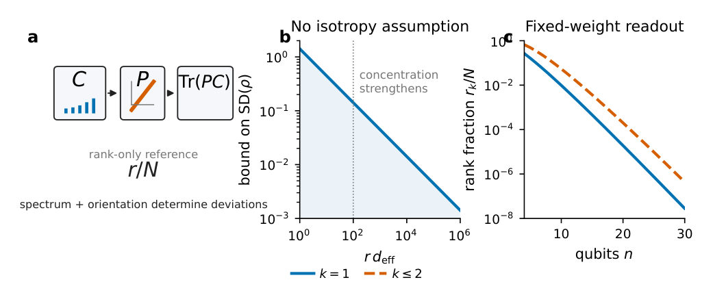
<figcaption class="paper-figure-caption"><b>Fig 1.</b> FIG. 1. Rank and orientation in measurement-accessible tangent geometry. A fixed quantum measurement induces a centered score space. A normalized tangent covariance C distributes tangent mass within that space, while a rank-r readout projector P selects the directions retained by the learner. The accessible tangent mass is R = Tr(PC). Random relative orientation gives the rank-only reference r/N; the spectrum of C controls the null width, while the physical orientation of P controls the observed deviation from that reference.</figcaption>
</figure>
<figure class="paper-figure-card">
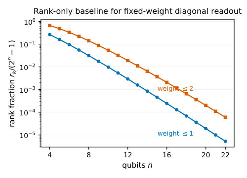
<figcaption class="paper-figure-caption"><b>Fig 2.</b> FIG. 2. Rank-only scale for fixed-weight diagonal readout un- der full computational-basis support. For fixed Pauli weight, the retained subspace rank grows polynomially while the cen- tered score-space dimension grows exponentially. The plotted fractions are geometric baselines only; physical retention de- pends on spectral orientation.</figcaption>
</figure>
<figure class="paper-figure-card">
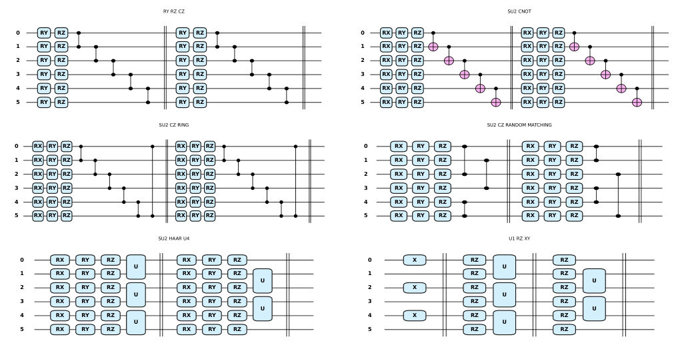
<figcaption class="paper-figure-caption"><b>Fig 3.</b> FIG. 3. Circuit families used in the numerical campaign, rendered directly from PennyLane circuit definitions [35]. From top left to bottom right: RY–RZ–CZ line, SU2–CNOT line, SU2–CZ ring, SU2–CZ random matching, SU2–Haar-U(4) brickwork, and the half-filled U(1) RZ–XY line. For legibility the drawings show n = 6 and two representative layers; the production simulations use the depths and system sizes specified in the numerical protocol. The U(1) panel begins from the alternating half-filled computational-basis state, matching the simulation code. Generic unitary boxes in the last row represent the actual two-qubit matrices used by the simulator rather than a gate decomposition.</figcaption>
</figure>
<figure class="paper-figure-card">
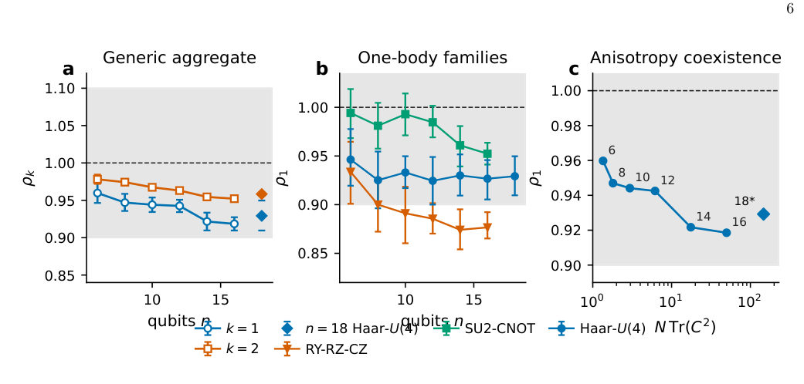
<figcaption class="paper-figure-caption"><b>Fig 4.</b> FIG. 4. Rank-normalized retention and covariance anisotropy. Family-balanced generic low-weight readouts remain close to the rank reference over the tested sizes even while N Tr(C2) grows and deff/N decreases. Architecture-resolved data show systematic deviations, demonstrating that the family-balanced result is not a claim of literal Haar orientation.</figcaption>
</figure>
<figure class="paper-figure-card">
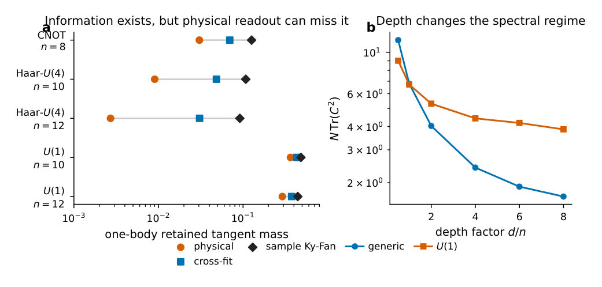
<figcaption class="paper-figure-caption"><b>Fig 5.</b> FIG. 5. Same-rank spectral comparison. Physical low-weight, cross-fitted aligned, and same-sample Ky Fan subspaces have identical rank but can retain very different tangent mass. The orientation gap is large in generic Haar-U(4) circuits and substantially smaller in the U(1) family.</figcaption>
</figure>
</div>

<p><strong>Summary.</strong> This work investigates how much quantum information remains accessible after a measurement is restricted to a low-rank readout subspace. The authors prove that the usable information depends critically on the <em>orientation</em> of the readout subspace relative to the true signal geometry, not just its rank. This has direct implications for designing optimal readout protocols in variational quantum algorithms.</p>
<p><strong>Why it may be interesting.</strong> It provides a rigorous geometric framework for understanding limitations in quantum machine learning readouts, showing that optimizing the <em>alignment</em> of the measurement basis is as crucial as maximizing the <em>number</em> of measured observables.</p>
<details>
<summary>Detailed structure</summary>
<p><strong>Main problem.</strong> The paper quantifies the information loss when quantum measurement outcomes are restricted to a low-rank readout subspace, analyzing the 'second contraction' of quantum geometry.</p>
<p><strong>Main result.</strong> The amount of usable tangent information is controlled not just by the readout rank, but critically by the specific <em>orientation</em> of the readout subspace relative to the true tangent covariance.</p>
<p><strong>Method.</strong> The analysis uses random-subspace averaging (Grassmann identity) to establish a null model, comparing the actual retained tangent mass (Tr(PC)) against this random baseline.</p>
<p><strong>Model / system.</strong> The study analyzes variational quantum circuits, modeling the measurement-induced tangent scores in a centered score space, using covariance matrices $C$ and readout projectors $P$.</p>
<p><strong>Key observables.</strong> Retained Tangent Mass ($R=	ext{Tr}(PC)$), Normalized Overlap ($
ho$), Directional Gradient-Energy Proxy, and Finite-Shot Signal-to-Noise Ratio (SNR).</p>
<p><strong>Important parameters / regimes.</strong> Readout Rank ($r$), Effective Spectral Dimension ($ ext{deff}$), and the specific circuit family (e.g., Haar-$U(4)$ vs. $U(1)$).</p>
<p><strong>Assumptions / limitations.</strong> The analysis treats the random-projection identity as a null model, and the U(1) symmetry result is explicitly noted as a case study, not a general theorem.</p>
<p><strong>Figures summary.</strong> Figures illustrate the conceptual separation between rank and orientation, show numerical gains (e.g., factor 9.584 in gradient energy) from cross-fitting alignment, and present model selection diagnostics for structured circuits.</p>
<p><strong>Paper structure.</strong> The paper establishes the mathematical framework by defining the tangent geometry and the readout restriction. It then develops the null model using random projections. The core of the work presents numerical evidence comparing physical readouts to optimally aligned subspaces, concluding that orientation is the key missing degree of freedom.</p>
</details>
<details>
<summary>Abstract</summary>
<p>A fixed quantum measurement can expose substantially more tangent information than a restricted observable readout retains. We study this second restriction. For a normalized covariance $C \succeq 0$, $\mathrm{Tr} C = 1$, of measurement-induced tangent scores in an $N$-dimensional centered score space, and a rank-$r$ readout projector $P$, we quantify retained tangent mass by $R=\mathrm{Tr}(PC)$. The ratio $ρ=R/(r/N)$ separates the actual retained mass from a rank-only random-orientation reference. Standard Grassmann averaging gives $\mathbb{E}ρ=1$ and $\mathrm{Var}(ρ) \le 2/(r d_{\mathrm{eff}})$, where $d_{\mathrm{eff}}=1/\mathrm{Tr}(C^2)$. We use this identity as a null model rather than as a new random-projection theorem. Numerically, family-balanced one- and two-body readouts remain close to the rank reference through $n=16$ even as the tangent covariance becomes strongly anisotropic. The decisive equal-rank comparison holds the circuit, measurement record, readout rank, and evaluation shot budget fixed. For Haar-$U(4)$ at $n=12$, cross-fitted alignment increases the mean directional gradient-energy proxy by a factor 9.584 and the finite-shot signal-to-noise ratio by a factor 3.111 relative to the physical one-body readout, while a random rank-matched subspace remains near the rank baseline. A half-filled $U(1)$-conserving family provides a structured counterexample to generic orientation: physical low-weight $Z$ readouts are already strongly aligned with leading tangent directions over the tested finite-size range. We treat this symmetry result as a case study, not as a claim that $U(1)$ symmetry generically prevents barren plateaus or that hydrodynamics is the established mechanism. The results isolate readout orientation as a degree of freedom invisible to rank alone that directly controls how much measured tangent information remains usable after readout restriction.</p>
</details>
<p><sub><a href="#top">↑ back to top</a></sub></p>

<p><a id="paper-2608.17026"></a></p>
<h3 id="eigenframe-synchronization-in-disordered-driven-quantum-ensembles"><a href="http://arxiv.org/abs/2608.17026v1">Eigenframe Synchronization in Disordered Driven Quantum Ensembles</a></h3>
<p><strong>Authors:</strong> Saipriya Satyajit, Zechuan Yin, Jner Tzern Oon, Katrijn Everaert, Smriti Bhalerao, John W. Blanchard, Christopher Jarzynski, Ronald L. Walsworth<br>
<strong>Type:</strong> both · <strong>Category:</strong> other · <strong>PDF:</strong> <a href="https://arxiv.org/pdf/2608.17026v1">https://arxiv.org/pdf/2608.17026v1</a><br>
<strong>Analysis basis:</strong> full PDF text, analyzed in chunks
<strong>Topic relevance:</strong> <code>QC/QI experiment</code> <strong>3/5</strong> · <code>analog quantum simulation</code> <strong>3/5</strong> · <code>driven-dissipative phase transition</code> <strong>3/5</strong> · <code>methods for driven-dissipative</code> <strong>3/5</strong> · <code>non-equilibrium universality</code> <strong>2/5</strong> · <code>quantum measurements</code> <strong>2/5</strong> · <code>Keldysh / 2PI / non-Gaussian methods</code> <strong>1/5</strong> · <code>correlated / nonlocal dissipation</code> <strong>1/5</strong> · <code>scars &amp; prethermalization</code> <strong>1/5</strong></p>
<div class="figure-strip-hint">↔ Scroll figures horizontally</div>
<div class="paper-figures-scroll">
<figure class="paper-figure-card">
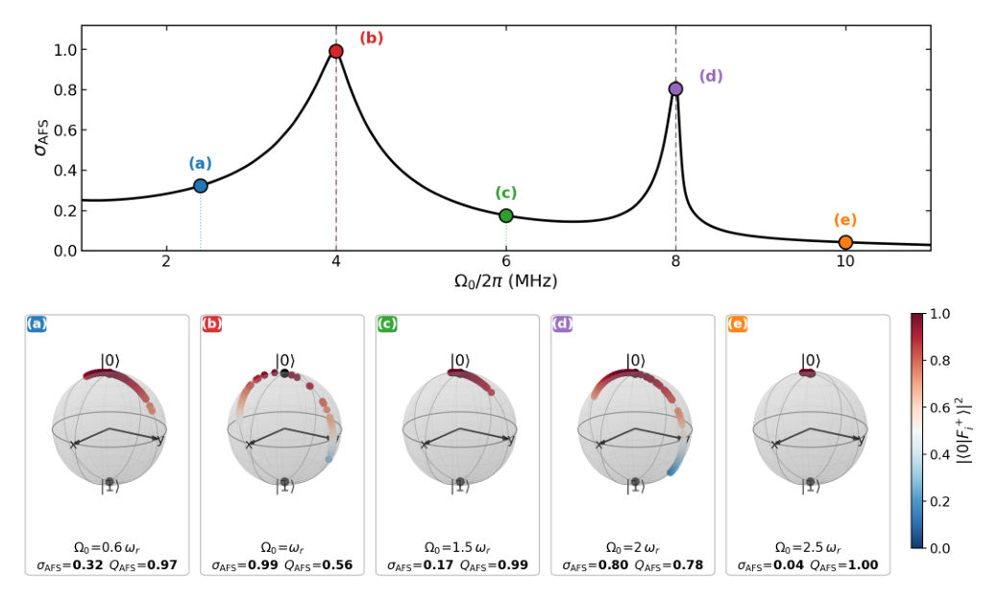
<figcaption class="paper-figure-caption"><b>Fig 1.</b> FIG. 1. Floquet eigenframe synchronization phase diagram. (top) Eigenframe fragmentation metric σAFS = p</figcaption>
</figure>
<figure class="paper-figure-card">
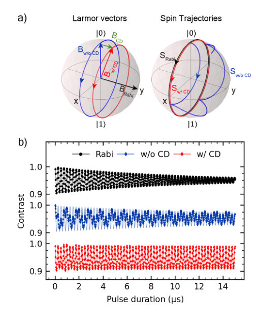
<figcaption class="paper-figure-caption"><b>Fig 2.</b> FIG. 2. Robust ensemble population control via AFS. (a) Bloch-sphere visualization of the effective control fields and spin trajectories for CW Rabi driving (black), modulated driving without counterdiabatic (CD) correction (blue), and full AFS protocol with CD correction (red). The CD term en- forces Floquet adiabatic following at the modulation rate used here ωr/2π = 4 MHz. (b) Measured NV ensemble photolu- minescence (PL) oscillations for the three protocols, resulting from coherent population modulation. The CW Rabi oscil- lation decays within ≈5 µs due to ensemble inhomogeneity, while the full AFS protocol preserves high-contrast oscilla- tions beyond 15 µs, demonstrating robust...</figcaption>
</figure>
<figure class="paper-figure-card">
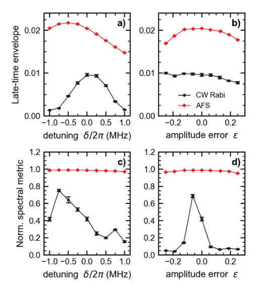
<figcaption class="paper-figure-caption"><b>Fig 3.</b> FIG. 3. Robustness of the synchronized ensemble dy- namics. Measured late-time oscillation metrics under con- trolled detuning and amplitude miscalibration, comparing CW Rabi driving (black) with the AFS protocol (red) at the operating point ωr/2π = 4 MHz, Ω0/2π = 3 MHz. The pan- els are line cuts of a two-dimensional (ϵ, δ) scan, through ϵ = 0 [(a),(c)] and δ = 0 [(b),(d)]. (a,b) Mean Hilbert-envelope am- plitude over the 5–10 µs late-time window, versus detuning δ and fractional amplitude error ϵ respectively. (c,d) Normal- ized spectral metric—the Fourier amplitude at ωr divided by the mean Hilbert-envelope amplitude over the same window— for the same two cuts. AFS sustains both contrast...</figcaption>
</figure>
<figure class="paper-figure-card">
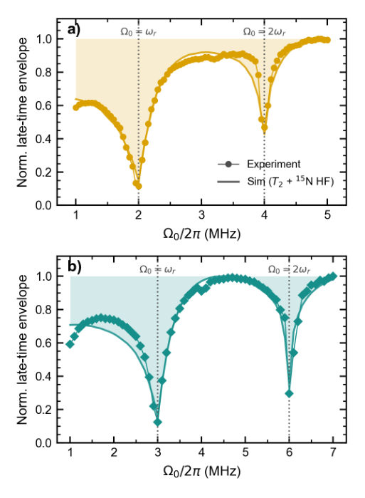
<figcaption class="paper-figure-caption"><b>Fig 4.</b> FIG. 4. Mapping the synchronization breakdown spectrum. Normalized late-time oscillation envelope (mean Hilbert-envelope amplitude of the AC component over the 5–10 µs window of the measured PL time trace) as the en- gineered gap Ω0 is swept at fixed modulation rate, for (a) ωr/2π = 2 MHz and (b) ωr/2π = 3 MHz. Markers are exper- iment; the solid curve in each plot is a matched-distribution simulation of an ensemble with amplitude disorder σϵ = 1% and effective detuning disorder σδ/2π = 0.9 MHz (Supple- mental Material). Each simulation curve is normalized to its own maximum; and the shaded region marks the envelope amplitude deficit relative to the synchronized baseline. Dot- ted lines...</figcaption>
</figure>
<figure class="paper-figure-card">
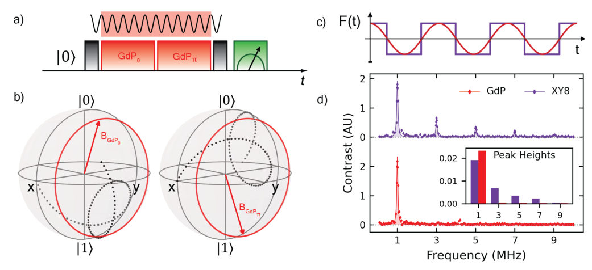
<figcaption class="paper-figure-caption"><b>Fig 5.</b> FIG. 5. Synchronization-enabled continuous AC sensing. (a) Schematic of the continuous AFS sensing sequence [GdP0, GdPπ]. (b) Bloch-sphere trajectories showing cancellation of the dynamic phase between the two geodesic blocks. (c) Filter functions for XY8 (purple) and the continuous AFS protocol (red). (d) Experimental AC magnetometry spectra, demonstrating the single-tone response of the synchronized NV ensemble alongside the odd-harmonic comb of XY8.</figcaption>
</figure>
</div>

<p><strong>Summary.</strong> This paper introduces the concept of Floquet eigenframe synchronization as a necessary geometric condition for achieving robust collective control in disordered quantum ensembles. By defining measurable metrics like the Synchronization Alignment Factor, the authors provide a diagnostic tool to quantify how well the ensemble acts as a single unit despite internal disorder. Experimental verification using NV centers demonstrates that this synchronization enables high-fidelity, disorder-resilient quantum sensing protocols.</p>
<p><strong>Why it may be interesting.</strong> This work provides a powerful, geometric diagnostic tool (the eigenframe) for understanding and engineering robustness in open, driven quantum systems, which is highly relevant to quantum sensing and quantum control in AMO physics.</p>
<details>
<summary>Detailed structure</summary>
<p><strong>Main problem.</strong> The paper addresses the challenge of achieving robust quantum control in periodically driven quantum ensembles where individual components experience different local disorder.</p>
<p><strong>Main result.</strong> It establishes Floquet eigenframe synchronization as a measurable, geometric condition for collective control, enabling disorder-resilient quantum sensing protocols.</p>
<p><strong>Method.</strong> The authors introduce and utilize a synchronization order parameter (SAFS) and a fragmentation metric ($\sigma_{AFS}$) to diagnose the alignment of Floquet quantization axes across the ensemble.</p>
<p><strong>Model / system.</strong> The study focuses on spin-based quantum sensing ensembles, specifically using Nitrogen-Vacancy (NV) centers in diamond, driven by time-periodic Hamiltonians.</p>
<p><strong>Key observables.</strong> Synchronization Alignment Factor (SAFS), Eigenframe Fragmentation Metric ($\sigma_{AFS}$), and measurable collective Rabi oscillations.</p>
<p><strong>Important parameters / regimes.</strong> The breakdown resonances are predicted at low-order commensurabilities between the engineered Floquet gap ($\Omega_0$) and the drive modulation ($\omega_r$), specifically at $\Omega_0 = \omega_r$ and $\Omega_0 = 2\omega_r$.</p>
<p><strong>Assumptions / limitations.</strong> The analysis assumes that the collective response can be characterized by the shared Floquet eigenframe, which is a geometric requirement beyond standard coherence measures.</p>
<p><strong>Figures summary.</strong> The notes suggest figures demonstrating long-lived collective oscillations, a two-dimensional disorder-robustness map, and the predicted shift of breakdown resonances with the modulation rate.</p>
<p><strong>Paper structure.</strong> The paper develops the theoretical framework for Floquet eigenframe synchronization, derives measurable criteria using the order parameter, predicts specific resonance breakdown channels, and validates the theory through experimental measurements on NV ensembles.</p>
</details>
<details>
<summary>Abstract</summary>
<p>Periodic driving underlies many forms of quantum control, including spin-based quantum sensing. However, in an ensemble sensor, one waveform must act on spins with different detunings, drive amplitudes, hyperfine environments, and local fields. Existing robust-control approaches to such disorder are usually framed in terms of coherence, effective Hamiltonians, filter functions, or refocusing. Here we identify a complementary geometric requirement for collective ensemble Floquet control: disorder realizations must share a common Floquet eigenframe. When this condition is met, initialization, protection, signal coupling, and readout are defined in one dressed basis, so the ensemble responds as a collective Floquet sensor rather than as an average over inequivalent driven members. We make this condition measurable with an eigenvector-based synchronization order parameter and a complementary fragmentation metric that quantify the alignment and spread of Floquet quantization axes across the ensemble. As one realization of this framework, we use a continuous counterdiabatic Floquet drive to derive synchronization criteria and predict resonance-governed breakdown at the first two low-order commensurabilities between the engineered Floquet gap and the drive modulation, with detuning and amplitude disorder producing distinct breakdown channels. Experiments on a nitrogen-vacancy (NV) ensemble in diamond verify the synchronized regime through long-lived collective oscillations, a two-dimensional disorder-robustness map, and breakdown resonances that shift with the modulation rate. Finally, we demonstrate a harmonic-free continuous-drive AC magnetometry protocol whose collective single-tone response is enabled by the synchronized Floquet eigenframe. These results establish Floquet eigenframe synchronization as a measurable condition for disorder-resilient collective control and quantum sensing.</p>
</details>
<p><sub><a href="#top">↑ back to top</a></sub></p>

<p><a id="paper-2608.17040"></a></p>
<h3 id="local-magnetic-resonance-of-scalar-spin-chirality"><a href="http://arxiv.org/abs/2608.17040v1">Local magnetic resonance of scalar spin chirality</a></h3>
<p><strong>Authors:</strong> Mar Ferri-Cortés, Joaquin Fernández-Rossier<br>
<strong>Type:</strong> both · <strong>Category:</strong> other · <strong>PDF:</strong> <a href="https://arxiv.org/pdf/2608.17040v1">https://arxiv.org/pdf/2608.17040v1</a><br>
<strong>Analysis basis:</strong> full PDF text, analyzed in chunks
<strong>Topic relevance:</strong> <code>analog quantum simulation</code> <strong>3/5</strong> · <code>driven-dissipative phase transition</code> <strong>3/5</strong> · <code>methods for driven-dissipative</code> <strong>3/5</strong> · <code>quantum measurements</code> <strong>3/5</strong> · <code>quantum optics experiment</code> <strong>2/5</strong> · <code>Keldysh / 2PI / non-Gaussian methods</code> <strong>1/5</strong> · <code>correlated / nonlocal dissipation</code> <strong>1/5</strong> · <code>interference shaping light</code> <strong>1/5</strong> · <code>non-equilibrium universality</code> <strong>1/5</strong></p>
<div class="figure-strip-hint">↔ Scroll figures horizontally</div>
<div class="paper-figures-scroll">
<figure class="paper-figure-card">
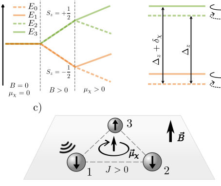
<figcaption class="paper-figure-caption"><b>Fig 1.</b> FIG. 1. Energy levels and physical system. a) Evolution of 4 lowest energy states of Hamiltonian 5. Colors denote spin sectors: orange and green for S = −1</figcaption>
</figure>
<figure class="paper-figure-card">
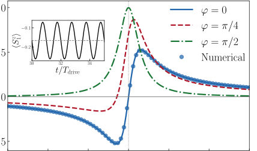
<figcaption class="paper-figure-caption"><b>Fig 2.</b> FIG. 2. Direct chirality resonance via homodyne detection. Main panel: steady-state homodyne signal ∆Ihom as a func- tion of the normalised detuning (¯hω −δχ)/δχ for three values of the phase difference φ (Eq. (13)). Blue dots are the full four-level Lindblad steady-state simulation results, in agree- ment with analytical theory (Eq. (11)). Inset: steady state lo- cal magnetization ⟨Sz 1⟩at resonance (ω = δχ/¯h), in agreement with Eq. (12). Dashed grey line marks the equilibrium value of −1/6. Parameters: B = 1T, µχ = 0.12µB, ¯hΩ= 200 neV, ΩT1,χ = 10 , γϕ,χ = Ω/10, kBT = δχ/4 .</figcaption>
</figure>
<figure class="paper-figure-card">
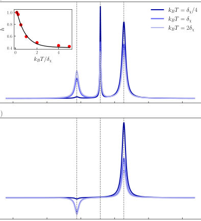
<figcaption class="paper-figure-caption"><b>Fig 3.</b> FIG. 3. Simulation of the ESR-STM resonance. a) ⟨Sz 1⟩(ω) for different temperatures, featuring resonance peaks at ¯hω = ∆z and ¯hω = ∆z ± δχ. The height lowest-energy peak ( ¯hω = ∆z −δχ) is controlled by equilibrium occupation of</figcaption>
</figure>
<figure class="paper-figure-card">
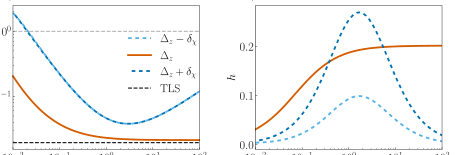
<figcaption class="paper-figure-caption"><b>Fig 4.</b> FIG. 4. Analysis of the resolution in the resonance experi- ment. a) The value of δFWHM normalized to δχ as a function</figcaption>
</figure>
</div>

<p><strong>Summary.</strong> This paper proposes using local magnetic resonance techniques to directly measure the orbital magnetic moment associated with scalar spin chirality in quantum magnetic systems. By applying a local drive that breaks rotational symmetry, the authors predict distinct spectroscopic signatures—such as peak splittings or homodyne resonance features—that allow for the quantitative determination of this elusive chiral moment.</p>
<p><strong>Why it may be interesting.</strong> This work bridges fundamental concepts of quantum magnetism (chirality) with advanced experimental techniques (STM, quantum dots), providing a concrete, measurable signature for a subtle quantum property.</p>
<details>
<summary>Detailed structure</summary>
<p><strong>Main problem.</strong> The paper addresses the challenge of directly measuring the orbital magnetic moment associated with scalar spin chirality (SSC), a property that is difficult to probe experimentally.</p>
<p><strong>Main result.</strong> Local magnetic resonance, achieved by breaking the system's rotational symmetry with a local drive, provides a spectroscopic route to measure this chiral orbital magnetic moment.</p>
<p><strong>Method.</strong> The authors propose and simulate two protocols: direct chirality resonance via homodyne detection, and chirality-resolved spin resonance by observing peak splittings in ESR measurements.</p>
<p><strong>Model / system.</strong> The system is modeled using an antiferromagnetic spin trimer or, more generally, a Hubbard model on a triangular ring subjected to a magnetic flux. The dynamics are governed by the Lindblad master equation.</p>
<p><strong>Key observables.</strong> The primary observables are the chiral orbital magnetic moment ($\mu_\chi$), the resonance signal $\Delta I_{hom}$ in homodyne detection, and the splitting ($\delta\chi$) of spin resonance peaks.</p>
<p><strong>Important parameters / regimes.</strong> Key parameters include the coupling strength ($\lambda$), the magnetic field ($B$), and the ratio of relaxation rates ($r = T_{1,\chi}/T_{1,s}$).</p>
<p><strong>Assumptions / limitations.</strong> The method critically relies on the local drive breaking the $C_3$ rotational symmetry, and simulations assume regimes where $k_B T$ is small compared to energy splittings.</p>
<p><strong>Figures summary.</strong> Figure 1 shows energy level splitting due to chirality. Figure 2 illustrates the homodyne signal $\Delta I_{hom}$ vs. detuning, showing resonant features. Figure 3 simulates ESR-STM resonance, confirming peaks at $\Delta_z \pm \delta\chi$. Figure 4 analyzes the resolution of the chiral splitting.</p>
<p><strong>Paper structure.</strong> The paper first establishes the theoretical framework linking SSC to an orbital moment. It then details the two spectroscopic protocols (homodyne detection and spin resonance) using the Lindblad master equation to model the time evolution and measurable signals.</p>
</details>
<details>
<summary>Abstract</summary>
<p>Quantum states with finite scalar spin chirality carry an orbital magnetic moment that has so far eluded direct measurement. We show that, whereas uniform electron spin resonance preserves chirality, a local drive breaks the cyclic symmetry and activates chirality-changing transitions, providing direct access to the chiral orbital magnetic moment. Lindblad simulations demonstrate experimentally accessible signatures in platforms with local spin addressability, including electron spin resonance with a scanning tunneling microscope, donor spins in silicon, and quantum-dot spin qubits.</p>
</details>
<p><sub><a href="#top">↑ back to top</a></sub></p>

<p><a id="paper-2608.17217"></a></p>
<h3 id="dynamical-protection-of-quantum-steering-and-fidelity-dynamics-in-double-jaynes-cummings-model"><a href="http://arxiv.org/abs/2608.17217v1">Dynamical protection of quantum steering and fidelity dynamics in double Jaynes-Cummings model</a></h3>
<p><strong>Authors:</strong> Koushik Mandal, Chitra Rangan, Shohini Ghose<br>
<strong>Type:</strong> theory · <strong>Category:</strong> other · <strong>PDF:</strong> <a href="https://arxiv.org/pdf/2608.17217v1">https://arxiv.org/pdf/2608.17217v1</a><br>
<strong>Analysis basis:</strong> full PDF text, analyzed in chunks
<strong>Topic relevance:</strong> <code>Tavis-Cummings &amp; cavity-many-emitter</code> <strong>3/5</strong> · <code>correlated / nonlocal dissipation</code> <strong>3/5</strong> · <code>analog quantum simulation</code> <strong>2/5</strong> · <code>driven-dissipative phase transition</code> <strong>2/5</strong> · <code>methods for driven-dissipative</code> <strong>2/5</strong> · <code>Keldysh / 2PI / non-Gaussian methods</code> <strong>1/5</strong> · <code>non-equilibrium universality</code> <strong>1/5</strong> · <code>quantum measurements</code> <strong>1/5</strong></p>
<div class="figure-strip-hint">↔ Scroll figures horizontally</div>
<div class="paper-figures-scroll">
<figure class="paper-figure-card">
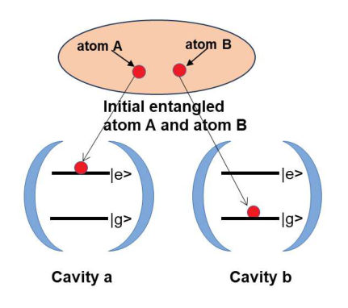
<figcaption class="paper-figure-caption"><b>Fig 1.</b> Figure 1: Schematic representation of the double Jaynes–Cummings model consisting of two spatially separated two-level atoms, each interacting locally with an independent cavity mode.</figcaption>
</figure>
<figure class="paper-figure-card">
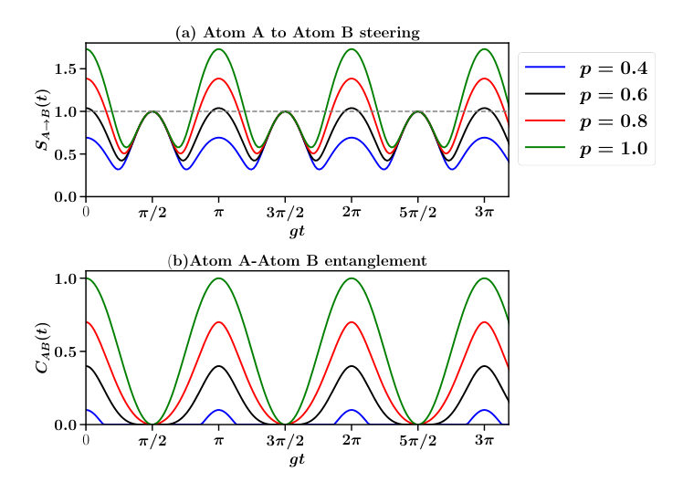
<figcaption class="paper-figure-caption"><b>Fig 2.</b> Figure 2: Dynamics of (a) quantum steering from atom A to atom B and (b) atom–atom entanglement for different values of the visibility parameter p. The chosen values p = 0.4,0.6,0.8, and 1.0 correspond to initial Werner states ranging from mixed entangled states to the maximally entangled Bell state.</figcaption>
</figure>
<figure class="paper-figure-card">
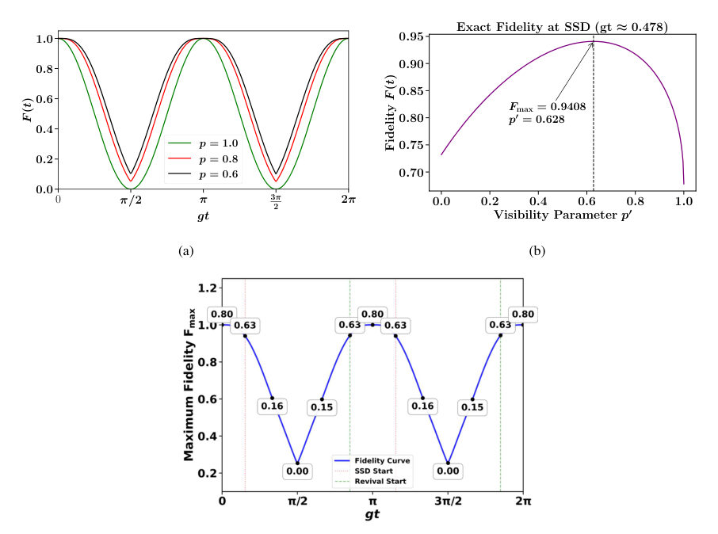
<figcaption class="paper-figure-caption"><b>Fig 3.</b> Figure 3: Panel (a) shows the time evolution of the fidelity for different initial Werner-state parameters p. In panel (b), we plot the fidelity between the evolved atomic state and the entire family of Werner states at the onset of steering sudden death for the initial condition p = 0.8. Panel (c) illustrates how the evolved state overlaps with different Werner states at several time instants for the same initial state. The numbers displayed inside the boxes denote the value of the Werner parameter p′ corresponding to the maximum fidelity.</figcaption>
</figure>
<figure class="paper-figure-card">

<figcaption class="paper-figure-caption"><b>Fig 4.</b> Figure 3(a) illustrates the time evolution of the fidelity F(t) for different initial visibility paramet- ers p. As the atom-cavity interaction progresses, the fidelity between the evolved atomic state and its initial configuration monotonically decreases. This decay signals that the local atom-field coupling is systematically redirecting quantum coherence away from the atomic subsystem and into the cavity modes. Within these specific temporal windows, the remaining atomic correlations drop below a critical threshold where the reduced state admits a local hidden state (LHS) description, thereby precipitating the onset of steering sudden death. Conversely, when the coherence is transferred...</figcaption>
</figure>
<figure class="paper-figure-card">
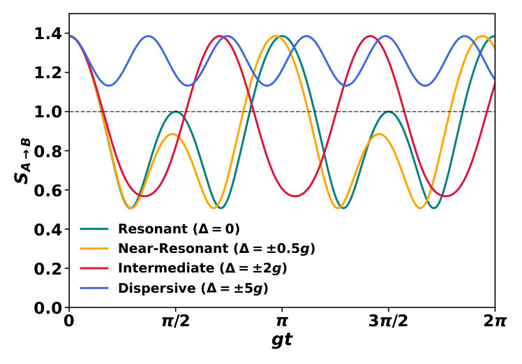
<figcaption class="paper-figure-caption"><b>Fig 5.</b> Figure 4: Dynamics of quantum steering in the presence of atom–cavity detuning for the initial Werner-state parameter p = 0.8. The steering dynamics are shown for different detuning regimes, including the resonant, intermediate, and dispersive regimes. Positive and negative values of detuning (±∆) correspond to blue- and red- detuned atomic transitions for atoms A and B, respectively.</figcaption>
</figure>
</div>

<p><strong>Summary.</strong> This paper analyzes the fragility of quantum steering in a double Jaynes-Cummings model, which simulates two entangled atoms coupled to optical cavities. The authors demonstrate that while steering can decay abruptly (sudden death), incorporating detuning or dipole-dipole interactions can protect these correlations. Crucially, they show that monitoring the state fidelity provides a reliable, measurable proxy for determining if the quantum system remains steerable.</p>
<p><strong>Why it may be interesting.</strong> This work is highly relevant to AMO physics and quantum optics as it tackles the robustness of nonclassical correlations (like steering) in realistic, dissipative light-matter platforms, providing actionable metrics for experimental control.</p>
<details>
<summary>Detailed structure</summary>
<p><strong>Main problem.</strong> The study investigates the dynamics of Einstein-Podolsky-Rosen (EPR) steering in a double Jaynes-Cummings model, focusing on how intrinsic noise affects quantum correlations.</p>
<p><strong>Main result.</strong> The authors find that detuning and dipole-dipole coupling help mitigate steering sudden death, and they establish that state fidelity serves as a practical, predictive indicator for quantum steerability.</p>
<p><strong>Method.</strong> The analysis uses theoretical derivations and numerical simulations to track the time evolution of quantum correlations by tracing out cavity degrees of freedom.</p>
<p><strong>Model / system.</strong> The system is the Double Jaynes-Cummings Model (DJCM), involving two spatially separated two-level atoms interacting with independent cavity modes. The evolution is governed by the Hamiltonian under the rotating-wave approximation.</p>
<p><strong>Key observables.</strong> EPR Steering ($S_{A	o B}$), Quantum Entanglement (Concurrence), and State Fidelity ($F(t)$).</p>
<p><strong>Important parameters / regimes.</strong> Initial Werner-type state purity ($p$), atom-cavity detuning ($\Delta$), and dipole-dipole coupling strength.</p>
<p><strong>Assumptions / limitations.</strong> The analysis often starts with Werner-type initial mixed states and involves tracing out the cavity modes to obtain the reduced atomic density matrix.</p>
<p><strong>Figures summary.</strong> Figures schematically represent the DJCM setup and illustrate the comparative dynamics of quantum steering and entanglement decay rates for varying initial correlation strengths.</p>
<p><strong>Paper structure.</strong> The paper systematically analyzes the evolution of quantum correlations, first establishing the model and key diagnostics (Steering, Entanglement, Fidelity). It then explores how environmental noise and interaction terms (like DDI) modify these dynamics, culminating in the identification of fidelity as a key resource indicator.</p>
</details>
<details>
<summary>Abstract</summary>
<p>We investigate the dynamics of Einstein-Podolsky-Rosen (EPR) steering in a double Jaynes-Cummings model, where two initially entangled spatially separated two-level atoms in two cavities interact with independent cavity modes. We study how the intrinsic noise in an initial Werner-type state affects the steering dynamics in this type of quantum optical systems. We also analyze the evolution of steering under experimentally relevant conditions, including atom-cavity detuning and dipole-dipole interactions. We find that both detuning and dipole-dipole coupling help reduce steering sudden death in the system. We further identify a direct correlation between steering and state fidelity, revealing a threshold below which steering disappears. This suggests that fidelity can serve as a practical indicator of steerability in cavity QED systems. Our results provide insight into the controllability and robustness of nonclassical correlations in realistic light-matter platforms.</p>
</details>
<p><sub><a href="#top">↑ back to top</a></sub></p>

<p><a id="paper-2608.17586"></a></p>
<h3 id="entropy-and-frenesy-the-arrow-and-the-bustle-of-time"><a href="http://arxiv.org/abs/2608.17586v1">Entropy and Frenesy: the arrow and the bustle of time</a></h3>
<p><strong>Authors:</strong> Christian Maes<br>
<strong>Type:</strong> theory · <strong>Category:</strong> statistical mechanics · <strong>PDF:</strong> <a href="https://arxiv.org/pdf/2608.17586v1">https://arxiv.org/pdf/2608.17586v1</a><br>
<strong>Analysis basis:</strong> full PDF text, analyzed in chunks
<strong>Topic relevance:</strong> <code>driven-dissipative phase transition</code> <strong>3/5</strong> · <code>non-equilibrium universality</code> <strong>3/5</strong> · <code>Keldysh / 2PI / non-Gaussian methods</code> <strong>2/5</strong> · <code>methods for driven-dissipative</code> <strong>2/5</strong> · <code>Frenkel-Kontorova</code> <strong>1/5</strong> · <code>analog quantum simulation</code> <strong>1/5</strong> · <code>correlated / nonlocal dissipation</code> <strong>1/5</strong> · <code>quantum measurements</code> <strong>1/5</strong> · <code>scars &amp; prethermalization</code> <strong>1/5</strong></p>
<div class="figure-strip-hint">↔ Scroll figures horizontally</div>
<div class="paper-figures-scroll">
<figure class="paper-figure-card">
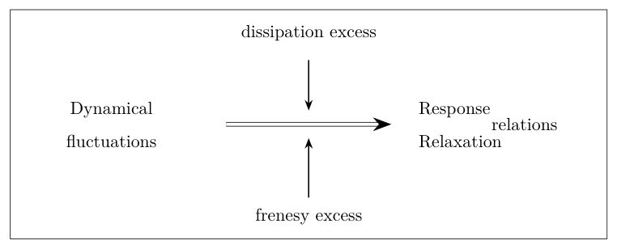
<figcaption class="paper-figure-caption"><b>Fig 1.</b> FIG. 1: Stimuli give rise to dissipation and frenesy excesses. The structure of the dynamical fluctuations</figcaption>
</figure>
<figure class="paper-figure-card">
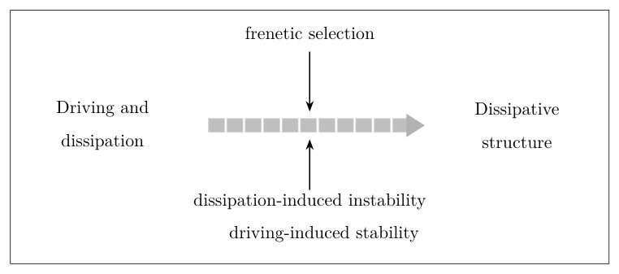
<figcaption class="paper-figure-caption"><b>Fig 2.</b> FIG. 2: Some (even narrow) new dissipation channel can destabilize what was boring behavior, and a</figcaption>
</figure>
<figure class="paper-figure-card">
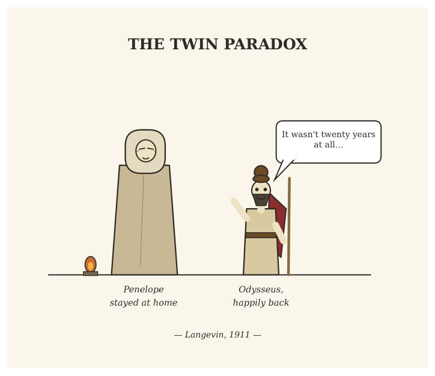
<figcaption class="paper-figure-caption"><b>Fig 3.</b> FIG. 3: The Twin Paradox without twins, mythologically recast as a fast Odysseus reaching home.</figcaption>
</figure>
<figure class="paper-figure-card">
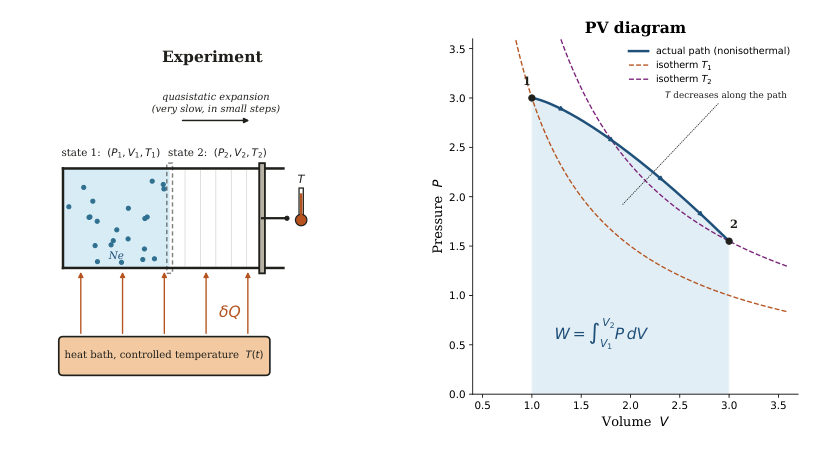
<figcaption class="paper-figure-caption"><b>Fig 4.</b> FIG. 4: Quasistatic expansion of one mole of Neon-gas cooling because the gas does more work expanding</figcaption>
</figure>
<figure class="paper-figure-card">
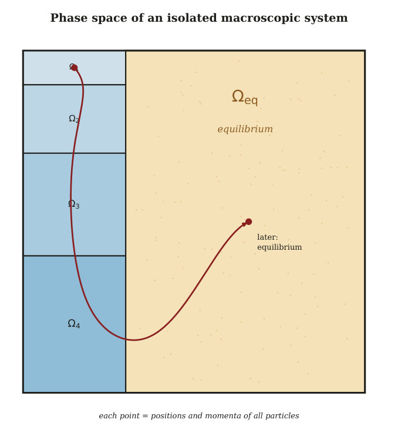
<figcaption class="paper-figure-caption"><b>Fig 5.</b> FIG. 5: Phase space of an isolated macroscopic system, partitioned into macrostates. A single</figcaption>
</figure>
</div>

<p><strong>Summary.</strong> This paper explores the nature of time in complex physical systems by analyzing non-equilibrium statistical mechanics. It argues that while entropy production defines the arrow of time, a complementary measure called 'frenesy' is needed to account for time-symmetric dynamical activity. Together, these two concepts offer a more complete theoretical framework for understanding physical time across various scales.</p>
<p><strong>Why it may be interesting.</strong> It provides a conceptual bridge by introducing 'frenesy' to complement the standard entropic approach, which is highly relevant for understanding non-equilibrium dynamics in open quantum systems or active matter.</p>
<details>
<summary>Detailed structure</summary>
<p><strong>Main problem.</strong> The paper addresses the fundamental mystery of the arrow of time in non-equilibrium statistical mechanics, reconciling time-reversible microscopic laws with macroscopic irreversibility.</p>
<p><strong>Main result.</strong> A complete understanding of physical time requires considering both entropy production (defining the arrow) and a newly introduced concept, 'frenesy' (measuring time-symmetric dynamical activity).</p>
<p><strong>Method.</strong> The analysis uses theoretical frameworks from non-equilibrium thermodynamics, stochastic processes, and fluctuation theorems to build a comprehensive picture of time's directionality.</p>
<p><strong>Model / system.</strong> The scope is general, covering open, driven, or active many-body systems, ranging from simple classical mechanics to complex mesoscopic processes.</p>
<p><strong>Key observables.</strong> Entropy production (measuring irreversibility), Frenesy (measuring time-symmetric activity), and dynamical fluctuations.</p>
<p><strong>Important parameters / regimes.</strong> Mesoscopic to macroscopic scales; non-equilibrium driving strength; temperature (implicitly via thermalization).</p>
<p><strong>Assumptions / limitations.</strong> The primary assumption is that entropy production and frenesy are complementary and both necessary for a full description of physical time.</p>
<p><strong>Figures summary.</strong> Figure 1 shows that stimuli generate both dissipation and frenesy excesses, underlying response relations. Figure 2 illustrates how dissipation-induced instability and driving-induced stability are mediated by time-symmetric kinetic aspects.</p>
<p><strong>Paper structure.</strong> The essay is structured to introduce the three core issues of non-equilibrium mechanics: the origin of entropy production (arrow of time), the selection of structure by driving, and the need for a unified theory, weaving in the concept of frenesy throughout.</p>
</details>
<details>
<summary>Abstract</summary>
<p>Nonequilibrium statistical mechanics is the science of time as it manifests itself in the transient or steady entropy producing dynamical condition of many-body systems. Beyond the vivid multiformity of the phenomena themselves, three foundational issues lie at its heart. The first question concerns the very origin of entropy production, which gives macroscopic processes their direction and thereby defines the arrow of time: how does an atomistic mechanical world give rise to dissipated heat, thermalization, and time-reversal symmetry breaking? The second asks why, far beyond the familiar behavior of equilibrium systems, driving or agitation may produce and select stable and functionally rich structures: what is it about far-from-equilibrium, low-entropy driving that unleashes the wealth and intricacy of the natural world? The third issue is partly methodological: to determine how, and for which subclass of such wildly diverse nonequilibrium systems, a systematic, unified description and modeling from first principles remains possible. This essay addresses these issues in an informal, semi-popular-science style, offering a personally engaging yet wide-ranging introduction to the complementary roles of entropy production and the less familiar, more recently coined notion of frenesy in the dynamical fluctuations of steadily driven systems. Together, we argue, they provide a more complete starting point for understanding physical time on mesoscopic to macroscopic scales.</p>
</details>
<p><sub><a href="#top">↑ back to top</a></sub></p>

<p><a id="paper-2608.17980"></a></p>
<h3 id="dressed-magnon-dynamics-in-a-bose-hubbard-bath-retardation-pairing-entanglement-and-two-magnon-scattering"><a href="http://arxiv.org/abs/2608.17980v1">Dressed magnon dynamics in a Bose-Hubbard bath: retardation, pairing, entanglement and two-magnon scattering</a></h3>
<p><strong>Authors:</strong> Andrés N. Cáliz, Arnau Riera, Enrique Rico, João Barata, Marcin Płodzień<br>
<strong>Type:</strong> theory · <strong>Category:</strong> other · <strong>PDF:</strong> <a href="https://arxiv.org/pdf/2608.17980v1">https://arxiv.org/pdf/2608.17980v1</a><br>
<strong>Analysis basis:</strong> full PDF text, analyzed in chunks
<strong>Topic relevance:</strong> <code>analog quantum simulation</code> <strong>3/5</strong> · <code>correlated / nonlocal dissipation</code> <strong>3/5</strong> · <code>methods for driven-dissipative</code> <strong>3/5</strong> · <code>Keldysh / 2PI / non-Gaussian methods</code> <strong>2/5</strong> · <code>driven-dissipative phase transition</code> <strong>1/5</strong> · <code>non-equilibrium universality</code> <strong>1/5</strong> · <code>quantum measurements</code> <strong>1/5</strong></p>
<div class="figure-strip-hint">↔ Scroll figures horizontally</div>
<div class="paper-figures-scroll">
<figure class="paper-figure-card">
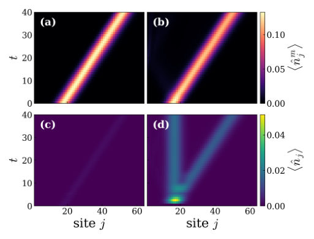
<figcaption class="paper-figure-caption"><b>Fig 1.</b> FIG. 1. Spatial anatomy of single-magnon retardation: com- parison of the Davydov mean field with the many-body dy- namics at matched parameters (ω0 = 2, λz = 0.6, tB = 0, U = 0, k0 = π/2, L = 64). (a,b) Magnon density ⟨ˆnm j ⟩in the mean field (a) and the many-body dynamics (b). The two re- sults are nearly indistinguishable: the mean field captures the dressed transport, while the small residual slowdown reflects the finite bath response time. (c,d) Bath occupation from the coherent cloud |γj|2 (c) and the many-body ⟨ˆnj⟩(d), using a common color scale. The mean-field cloud is substantially fainter than the many-body one: the coherent field carries only the mean-field contribution and...</figcaption>
</figure>
<figure class="paper-figure-card">
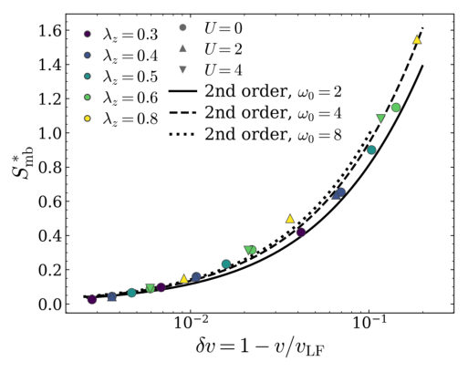
<figcaption class="paper-figure-caption"><b>Fig 2.</b> FIG. 3. Late-time magnon-boson entanglement versus the velocity deficit for a single magnon (k0 = π/2, L = 64). Col- ors denote λz and markers denote U. The deficit is corrected with a λz = 0 packet of identical width; see Appendix H. Dashed curves show second-order perturbation theory results for ω0 = 2, 4, 8. The numerical data include the same three bath frequencies, which are not distinguished by additional marker styles. The curves are evaluated for the simulated wavepacket without fitted parameters. The collapse holds in the weak-dressing, off-resonant regime and deteriorates near ω0 = J and near self-trapping.</figcaption>
</figure>
<figure class="paper-figure-card">
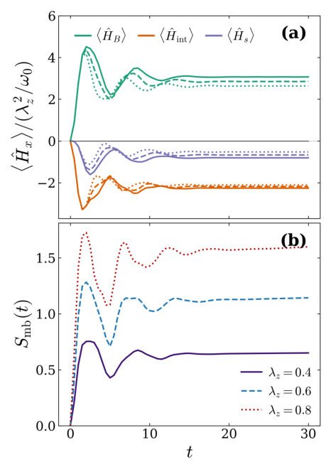
<figcaption class="paper-figure-caption"><b>Fig 3.</b> FIG. 2. Formation of a single-magnon polaron after release with the bath initially in its vacuum (ω0 = 2, k0 = π/2, L = 64) for λz = 0.4, 0.6, 0.8 (solid, dashed, dotted). (a) Bath, interaction, and exchange energies in units of λ2 z/ω0, together with the conserved total energy (gray). (b) Magnon- boson entanglement entropy for the same couplings.</figcaption>
</figure>
<figure class="paper-figure-card">
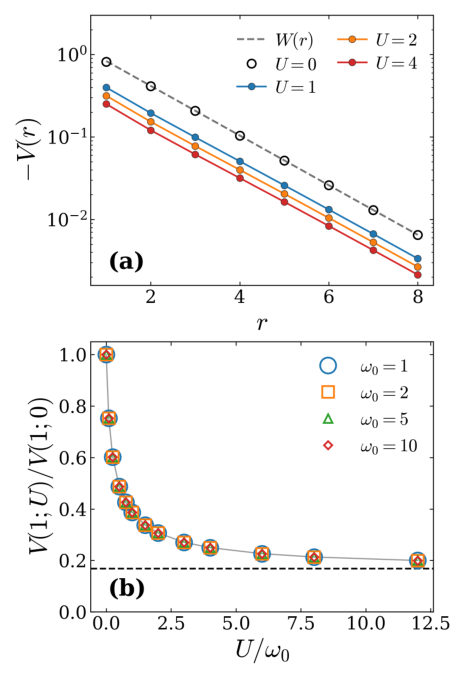
<figcaption class="paper-figure-caption"><b>Fig 4.</b> FIG. 4. Bath-mediated potential in the Born-Oppenheimer limit (J = 0), with λz/ω0 = 0.5 and tB/ω0 = 0.4. (a) Log- arithmic plot of −V (r) at ω0 = 2 for U = 0-4. The open circles at U = 0 reproduce the analytic result W(r) (dashed line); increasing U lowers the approximately parallel profiles. (b) Depth ratio V (1; U)/V (1; 0) as a function of U/ω0 for ω0 = 1-10 (nested open markers). The ratio approaches the finite hard-core limit f∞of Eq. (25) (black dashed line), with f∞≃0.17 for the parameters shown.</figcaption>
</figure>
<figure class="paper-figure-card">
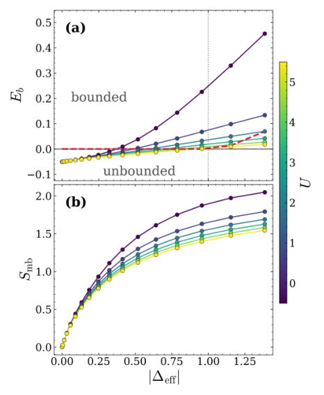
<figcaption class="paper-figure-caption"><b>Fig 5.</b> FIG. 5. Ground-state properties of two magnons coupled to the full quantum bath (ω0 = 3, tB = 1, L = 16). The nominal U = 0 antiadiabatic anisotropy |∆eff| is varied through λz, and colors denote six values of U. (a) Binding energy Eb defined in Eq. (28). The dashed curve is the nearest-neighbor antiadiabatic estimate of Eq. (27), and the dotted vertical line marks |∆eff| = 1. Increasing U reduces Eb and shifts its onset to larger |∆eff|. (b) Magnon-boson entanglement entropy Smb, which increases with dressing and is suppressed by U.</figcaption>
</figure>
</div>

<p><strong>Summary.</strong> This paper models magnon dynamics in a quantum magnet coupled to a bosonic bath, revealing that the bath dressing causes the magnon to form a polaron. The key finding is that the measurable slowdown of the magnon's velocity quantifies the entanglement between the magnon and the bath, while the bath also mediates an attractive interaction leading to magnon pairing.</p>
<p><strong>Why it may be interesting.</strong> This work provides a concrete, measurable link (velocity deficit) between transport properties and non-local quantum correlations (entanglement) in a system relevant to quantum magnetism and strongly correlated materials.</p>
<details>
<summary>Detailed structure</summary>
<p><strong>Main problem.</strong> The study investigates one- and two-magnon dynamics in a spin-1/2 XX chain coupled to a tunable Bose-Hubbard bath, focusing on the interplay between retardation, pairing, and entanglement.</p>
<p><strong>Main result.</strong> The bath mediates an effective attraction between two magnons, leading to a bound state, while the measurable velocity deficit of a single magnon serves as a proxy for quantifying magnon-boson entanglement.</p>
<p><strong>Method.</strong> The authors employ a combination of polaron transformations, tensor network simulations (MPS), and Green's function techniques to analyze the coupled dynamics.</p>
<p><strong>Model / system.</strong> The system consists of a spin-1/2 XX chain coupled to a Bose-Hubbard bath via a density-coupling interaction. The dynamics are analyzed by treating the magnon as a polaron dressed by the bosonic bath.</p>
<p><strong>Key observables.</strong> Velocity deficit ($\delta v$), magnon-boson entanglement entropy ($S_{mb}$), and the effective two-magnon binding potential ($V(r)$).</p>
<p><strong>Important parameters / regimes.</strong> Bath deformability (controlled by on-site repulsion $U$), coupling strength ($\lambda$), and the ratio of bath frequency to hopping ($t_B/\omega_0$).</p>
<p><strong>Assumptions / limitations.</strong> The analysis relies on approximations such as the single-field coherent-state ansatz and the weak-coupling limit for relating $\delta v$ to entanglement.</p>
<p><strong>Figures summary.</strong> Figures compare coherent-state vs. many-body dynamics, show the time evolution of entanglement entropy during polaron formation, and plot the relationship between late-time entanglement and the velocity deficit.</p>
<p><strong>Paper structure.</strong> The paper progresses by first analyzing the single-magnon polaron dynamics to establish the velocity deficit as an entanglement proxy, then examining the two-magnon sector to derive the bath-mediated attraction, and finally identifying bath deformability as the universal control parameter.</p>
</details>
<details>
<summary>Abstract</summary>
<p>We study one- and two-magnon dynamics in a spin-$1/2$ XX chain coupled to a tunable Bose-Hubbard bath. The XX Hamiltonian transports the magnons, while the bath dresses their motion and mediates an effective attraction. A single magnon forms a mobile polaron whose retarded bosonic cloud reduces its velocity below the static Lang-Firsov prediction and generates magnon-boson entanglement. In the weak-dressing, off-resonant mobile regime, the residual velocity deficit and entanglement are governed by the excitation weight of the cloud, as captured by perturbation theory and tensor network-based real-time simulations. Transport therefore provides a model-calibrated proxy for entanglement without joint-state reconstruction. When two clouds overlap, the bath mediates a finite-range attraction, yielding finite-size evidence for a compact two-magnon bound state and a transient post-scattering signature. On-site bath interactions suppress local boson number fluctuations and stiffen the bath response, reducing entanglement and weakening ground-state binding. Bath deformability thus emerges as a common control parameter for magnon transport, entanglement, and bath-mediated pairing.</p>
</details>
<p><sub><a href="#top">↑ back to top</a></sub></p>

<p><a id="paper-2608.17428"></a></p>
<h3 id="flat-band-and-bulk-boundary-correspondence-in-a-non-hermitian-trimerized-lattice-model-with-generic-boundary-conditions"><a href="http://arxiv.org/abs/2608.17428v1">Flat band and Bulk-Boundary correspondence in a non-Hermitian trimerized lattice model with generic boundary conditions</a></h3>
<p><strong>Authors:</strong> Supriyo Ghosh, Pijush K. Ghosh, Shreekantha Sil<br>
<strong>Type:</strong> theory · <strong>Category:</strong> other · <strong>PDF:</strong> <a href="https://arxiv.org/pdf/2608.17428v1">https://arxiv.org/pdf/2608.17428v1</a><br>
<strong>Analysis basis:</strong> full PDF text, analyzed in chunks
<strong>Topic relevance:</strong> <code>analog quantum simulation</code> <strong>3/5</strong> · <code>driven-dissipative phase transition</code> <strong>3/5</strong> · <code>correlated / nonlocal dissipation</code> <strong>2/5</strong> · <code>methods for driven-dissipative</code> <strong>2/5</strong> · <code>non-equilibrium universality</code> <strong>2/5</strong> · <code>Keldysh / 2PI / non-Gaussian methods</code> <strong>1/5</strong></p>
<div class="figure-strip-hint">↔ Scroll figures horizontally</div>
<div class="paper-figures-scroll">
<figure class="paper-figure-card">
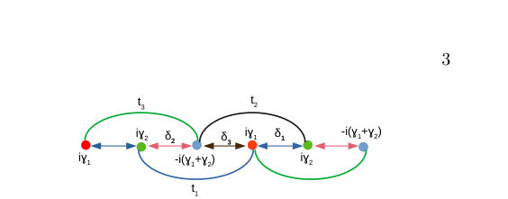
<figcaption class="paper-figure-caption"><b>Fig 1.</b> FIG. 1: Schematic diagram of the trimerized lattice model</figcaption>
</figure>
<figure class="paper-figure-card">
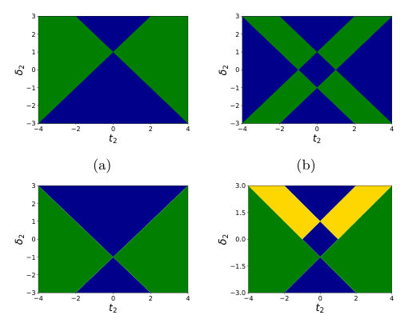
<figcaption class="paper-figure-caption"><b>Fig 2.</b> FIG. 2: Contour plot of Zak phases for γ1 = 0. Blue, green and yellow colors indicates the value of 0, π, 2π respectively. Fig.(a) Zak phase corresponding to lower band, Fig.(b) Zak phase corresponding to middle band, Fig.(c) Zak phase corresponding to upper band, Fig.(d) Sum of Zak phases corresponding to lower and middle band. Parameter values : γ1 = 0, δ3 = t1 = 0, δ1 = t3 = 1, γ2 = 0.3.</figcaption>
</figure>
<figure class="paper-figure-card">
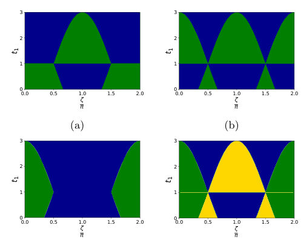
<figcaption class="paper-figure-caption"><b>Fig 3.</b> FIG. 3: Contour plot of the Zak phase for γ2 = 0. Pa- rameter values : δ2 = δ1 = 1,t2 = t1, γ1 = 0.3,γ2 = 0, δ3 = 1 + cos(ζ), t3 = 1 −cos(ζ). Blue, green and yel- low colors indicates the value of 0, π, 2π respectively. Fig.(a) Zak phase corresponding to lower energy band, Fig.(b) Zak phase corresponding to middle energy band, Fig.(c) Zak phase corresponding to upper en- ergy band, Fig.(d) Sum of Zak phases corresponding to lower and middle band</figcaption>
</figure>
<figure class="paper-figure-card">
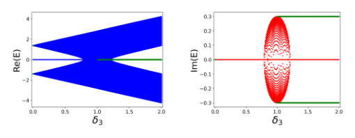
<figcaption class="paper-figure-caption"><b>Fig 4.</b> FIG. 5: Plot of the spectrum under OBC for γ1 = 0. Parameter values : γ1 = 0,γ2 = 0.3, δ2 = t2 = 0, δ1 = t3 = 1, δ3 = t1.</figcaption>
</figure>
<figure class="paper-figure-card">
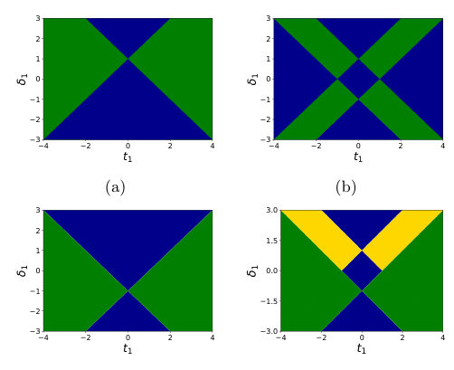
<figcaption class="paper-figure-caption"><b>Fig 5.</b> FIG. 4: Contour plot of Zak phases for γ2 = −γ1. Blue, green and yellow colors indicate the value of 0, π, 2π re- spectively. Fig.(a) Zak phase corresponding to lower band, Fig.(b) Zak phase corresponding to middle band, Fig.(c) Zak phase corresponding to upper band, Fig.(d) Sum of Zak phases corresponding to lower and middle band. Parameter values : γ1 = −γ2 = 0.3, δ3 = t2 = 0, δ2 = t3 = 1.</figcaption>
</figure>
</div>

<p><strong>Summary.</strong> This paper analyzes a non-Hermitian trimerized lattice model to understand how lattice symmetries and boundary conditions affect topological properties. It establishes the non-Hermitian Bulk-Boundary Correspondence and derives analytical results for edge states under general boundary conditions. The findings are crucial for designing artificial quantum systems with controlled topological edge states.</p>
<p><strong>Why it may be interesting.</strong> The work bridges concepts from topological physics (SSH models, topology) with non-Hermitian physics (loss/gain, non-Hermiticity), which is highly relevant for understanding open quantum systems and engineered photonic/electronic lattices.</p>
<details>
<summary>Detailed structure</summary>
<p><strong>Main problem.</strong> The study investigates the combined effects of lattice symmetries, non-Hermiticity, and general boundary conditions on the existence of flat bands and the nature of the Bulk-Boundary Correspondence (BBC).</p>
<p><strong>Main result.</strong> The authors establish non-Hermitian BBC in the trimerized lattice model and derive analytic expressions for edge states under general boundary conditions, showing how symmetry dictates the presence of localized states.</p>
<p><strong>Method.</strong> The research employs analytical derivations for spectral properties under periodic and general boundary conditions, alongside numerical simulations to observe edge states and topological phase transitions.</p>
<p><strong>Model / system.</strong> The model is a Su-Schrieffer-Heeger (SSH)-type trimer model incorporating next-nearest-neighbor (NNN) interactions and balanced loss-gain (BLG) terms, making it non-Hermitian.</p>
<p><strong>Key observables.</strong> Flat bands (Compact Localized States, CLS), Topological Phase Transitions (TPT) via Zak phases, Bulk-Boundary Correspondence (BBC), and the non-Hermitian Skin Effect (NHSE).</p>
<p><strong>Important parameters / regimes.</strong> BLG interaction strength, NNN interaction strength, and the specific parameters defining the general boundary conditions (GBC).</p>
<p><strong>Assumptions / limitations.</strong> The analysis generalizes previous work by extending the formalism to include general boundary conditions (GBC) beyond simple open or periodic boundaries.</p>
<p><strong>Figures summary.</strong> Not specified in the notes, but the context implies figures showing energy spectra, topological invariants (Zak phases), and edge state localization.</p>
<p><strong>Paper structure.</strong> The paper systematically analyzes the system under PBC to find conditions for real spectra and derive CLS, then extends the analysis to OBC and finally generalizes the formalism to study the Hamiltonian under arbitrary GBC.</p>
</details>
<details>
<summary>Abstract</summary>
<p>We consider a Su-Schrieffer-Heeger(SSH)-type trimer model with next-nearest-neighbor(NNN) interaction and balanced loss-gain(BLG) to study the combined effect of lattice symmetries, topology, non-hermiticity and general boundary conditions(GBC)on the existence of flat band and the nature of Bulk-Boundary correspondence(BBC). We derive the necessary and sufficient conditions for the existence of an entirely real spectrum under the periodic boundary condition(PBC). The exact expressions for the compact localized states(CLS) and energy eigenvalues corresponding to flat bands are derived analytically under the PBC. We establish topological phase transitions(TPT) for PT-symmetry and pseudo-chiral symmetry through the computation of the Zak phase and sub-lattice Zak phase, respectively. The Hamiltonian under the open boundary condition(OBC) is studied numerically, and edge states are observed in the topologically non-trivial phase, thereby establishing the non-hermitian BBC. The CLS exists in both bulk and the boundary for systems having only pseudo-chiral symmetry, and an additional PT-symmetry destroys the CLS at the boundary. We generalize a known formalism to study the same Hamiltonian under GBC, and derive analytic expressions for the energy and eigenstates for a class of boundary conditions in parametric ranges which admit flat band under the PBC. The edge states for these boundary conditions, including the OBC, are obtained analytically in the topologically non-trivial phase, thereby establishing BBC. The non-hermitian skin effect(NHSE) is seen in the model with reciprocal bulk interaction and strongly non-reciprocal boundary terms. The winding number based on spectral topology is computed analytically.</p>
</details>
<p><sub><a href="#top">↑ back to top</a></sub></p>

<p><a id="paper-2608.17511"></a></p>
<h3 id="conditional-path-monte-carlo-for-rare-stochastic-dynamics-on-networks-details-and-derivations"><a href="http://arxiv.org/abs/2608.17511v1">Conditional-path Monte Carlo for rare stochastic dynamics on networks: Details and derivations</a></h3>
<p><strong>Authors:</strong> Thomas Barthel, Jiazheng Sun, Jhao-Hong Peng<br>
<strong>Type:</strong> theory · <strong>Category:</strong> statistical mechanics · <strong>PDF:</strong> <a href="https://arxiv.org/pdf/2608.17511v1">https://arxiv.org/pdf/2608.17511v1</a><br>
<strong>Analysis basis:</strong> full PDF text, analyzed in chunks
<strong>Topic relevance:</strong> <code>methods for driven-dissipative</code> <strong>3/5</strong> · <code>analog quantum simulation</code> <strong>2/5</strong> · <code>quantum measurements</code> <strong>2/5</strong> · <code>Keldysh / 2PI / non-Gaussian methods</code> <strong>1/5</strong> · <code>driven-dissipative phase transition</code> <strong>1/5</strong> · <code>non-equilibrium universality</code> <strong>1/5</strong> · <code>scars &amp; prethermalization</code> <strong>1/5</strong></p>
<div class="figure-strip-hint">↔ Scroll figures horizontally</div>
<div class="paper-figures-scroll">
<figure class="paper-figure-card">
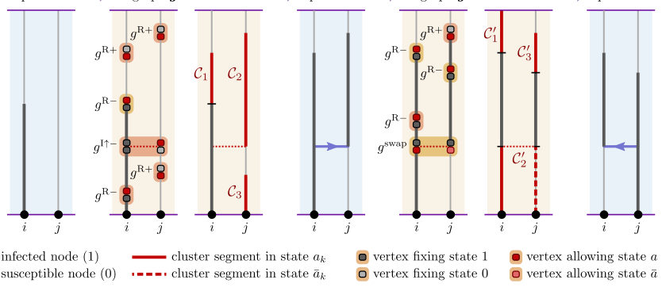
<figcaption class="paper-figure-caption"><b>Fig 1.</b> FIG. 1. Two cluster updates for a simple SIS trajectory. The cluster updates for two nodes of an SIS model described in Example 4 start from a trajectory σ, where node i is infected until time τ, and node j is susceptible for the entire time [0, T]. In the construction of graph g, the recovery of node i is matched by the vertex gR− (τ,i) = (1 →a), where state a is free to take values 0 (susceptible) and 1 (infected). Additional four single-node background vertices and one edge background vertex are inserted by Poisson point processes; indicated by a redder background color. The edge vertex gI↑− (t3,i,j) = (1, 0 →1, a) fixes node i to be infected before and after time t3, hence fixing the...</figcaption>
</figure>
<figure class="paper-figure-card">
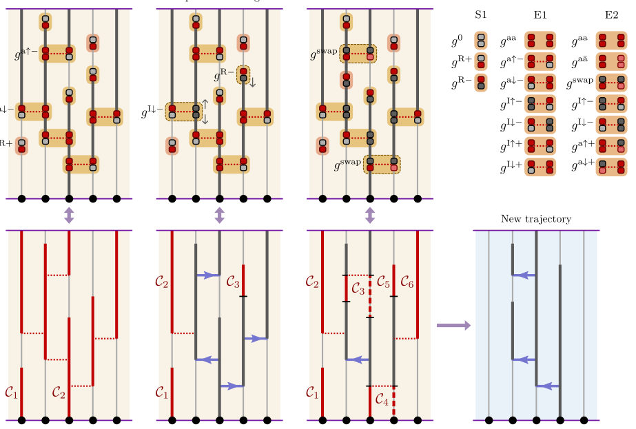
<figcaption class="paper-figure-caption"><b>Fig 2.</b> FIG. 2. Upstream lock avalanches with edge vertex set E1 and unlocking with set E2. For a given SIS-model trajectory σ, panels (a), (b), and (c) show different compatible graphs g (top) and the associated configurations of clusters (bottom). We employ the same graphical conventions as in Fig. 1, and panel (d) specifies the different employed vertex sets in accordance with Sec. V. Panel (a) shows an (unlikely) choice of graph vertices that lead to a big free cluster C2 that includes patient zero (node 3). To achieve a mobile patient zero with vertex sets S1 and E1, the graph must happen to be such that all vertices downstream of patient zero are gR+, ga↑−, or ga↓−as in this case. The...</figcaption>
</figure>
<figure class="paper-figure-card">
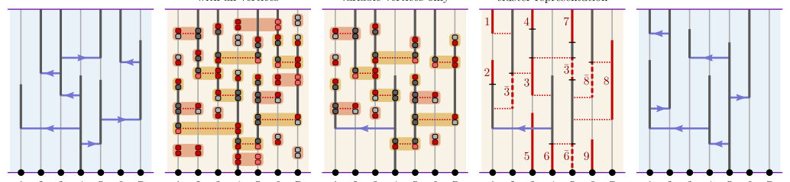
<figcaption class="paper-figure-caption"><b>Fig 3.</b> FIG. 3. Example for a more complex cluster update with edge vertex set E2. (a) An SIS-model trajectory σ on seven nodes with node 4 as patient zero and four infected nodes at the final time. (b) A compatible graph g based on the S1 and E2 vertex sets. As before, vertices at state- changing events in σ are indicated by orange boxes and background vertices are indicated by red boxes. (c) To make the cluster identification easier for the human eye, we have removed all vertices that ultimately have no free state variables and have fixed the corresponding parts of the trajectory. (d) Cluster representation of the graph g, where each red solid time segment with label “k” carries state ak = 0, 1...</figcaption>
</figure>
<figure class="paper-figure-card">
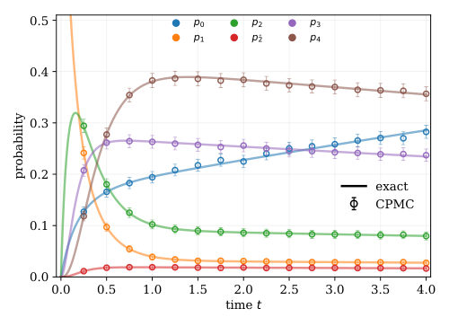
<figcaption class="paper-figure-caption"><b>Fig 4.</b> FIG. 4. Homogeneous four-node SIS ring network with γ = 1 and α = 3: Probabilities pi(t) for finding the system in macrostates si [Eq. (67)] at time t, when starting in one of the four s1 states.</figcaption>
</figure>
<figure class="paper-figure-card">
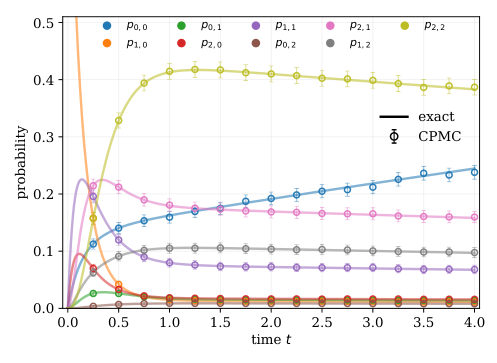
<figcaption class="paper-figure-caption"><b>Fig 5.</b> FIG. 5. Four-node diamond SIS network with two hub nodes and two leaf nodes, γ = 1 and α = 5/2: Probabilities pnh,nℓ(t) for finding the system with (nh, nℓ) infected nodes hub and leaf nodes at time t, when starting in an (nh, nℓ) = (1, 0) state.</figcaption>
</figure>
</div>

<p><strong>Summary.</strong> This paper presents Conditional-path Monte Carlo (CPMC), a novel simulation technique designed to overcome severe sampling bottlenecks when studying rare events in stochastic network dynamics. By utilizing non-local cluster updates on the full spacetime trajectory, CPMC efficiently samples the path space for models like the SIS epidemic model. It provides the rigorous mathematical framework for this method, including handling complex boundary constraints without rejection.</p>
<p><strong>Why it may be interesting.</strong> While focused on classical stochastic processes, the techniques developed for path sampling and rare-event simulation are highly relevant to non-equilibrium quantum dynamics, particularly in simulating quantum quenches or thermalization pathways.</p>
<details>
<summary>Detailed structure</summary>
<p><strong>Main problem.</strong> The paper addresses the challenge of simulating rare macroscopic events in stochastic network dynamics, such as epidemic outbreaks or system escape from metastable states.</p>
<p><strong>Main result.</strong> It introduces Conditional-path Monte Carlo (CPMC), a method that bypasses limitations of existing path sampling techniques by operating directly on full-system trajectories.</p>
<p><strong>Method.</strong> CPMC uses non-local Swendsen-Wang-like cluster updates on a graph representation of the spacetime trajectory to generate valid paths while maintaining detailed balance.</p>
<p><strong>Model / system.</strong> The primary example is the Susceptible-Infected-Susceptible (SIS) model on a network, representing stochastic dynamics in many-body systems. The method is general for Markovian dynamics.</p>
<p><strong>Key observables.</strong> Path probability density $P(\sigma)$, total escape rate $\Lambda_t(\sigma_t)$, and the number of infected nodes at initial and final times.</p>
<p><strong>Important parameters / regimes.</strong> The time interval $T$, network size $N$, and specific rates for the SIS model (e.g., infection and recovery rates).</p>
<p><strong>Assumptions / limitations.</strong> The method assumes the dynamics can be mapped onto a path-graph structure suitable for cluster updates; it also details dynamic programming for handling complex boundary conditions exactly.</p>
<p><strong>Figures summary.</strong> Figures illustrate the cluster update mechanism for an SIS trajectory, showing how graph vertices are inserted and how changing the state of these vertices yields a new, valid trajectory.</p>
<p><strong>Paper structure.</strong> The paper first reviews the limitations of standard path sampling methods (SSA, TPS, etc.). It then rigorously derives the mathematical foundations for CPMC, detailing the joint path-graph probability weights. Finally, it applies the framework to the SIS model, detailing cluster optimization and a dynamic programming scheme for constrained sampling.</p>
</details>
<details>
<summary>Abstract</summary>
<p>The simulation of rare macroscopic events in stochastic network dynamics, such as widespread epidemic outbreaks, cascading failures in communication networks, or the escape from metastable states in many-body systems, is severely hindered by methodological challenges like catastrophic rejection rates, weight degeneracy, genealogical correlations, and critical slowing down inherent to standard forward-time algorithms, splitting methods, and transition-path sampling. Conditional-path Monte Carlo (CPMC) overcomes these limitations by employing non-local Swendsen-Wang-like cluster updates that operate directly on full-system trajectories. Serving as the technical companion to [Sun, Moody, and Barthel, arXiv:2608.16171], this paper provides the rigorous mathematical foundations and algorithmic details underlying the CPMC framework. We formally define the joint path-graph probability weights and derive the transition and uniformization sum rules that guarantee detailed balance. Applying the framework to susceptible-infectious-susceptible (SIS) models, we systematically construct and optimize single-node and edge graph vertex sets specifically designed to prevent lock avalanches and maintain the structural mobility of the epidemic trunk. Furthermore, we detail a dynamic programming scheme to exactly implement complex boundary conditions - including patient-zero and macroscopic outbreak-size constraints - enabling the rejection-free generation of valid trajectories. Finally, we assess the computational complexity of the algorithm, describe parallelization strategies, and validate CPMC against exact solutions for dynamics on small networks.</p>
</details>
<p><sub><a href="#top">↑ back to top</a></sub></p>

<p><a id="paper-2608.17506"></a></p>
<h3 id="engineering-of-dual-wavelength-polarization-selective-metalenses-in-silicon-carbide"><a href="http://arxiv.org/abs/2608.17506v1">Engineering of Dual Wavelength, Polarization Selective Metalenses in Silicon Carbide</a></h3>
<p><strong>Authors:</strong> Xiaoying Huang, Ziwei Yang, Konosuke Shimazaki, Kritsana Saego, Otto Cranwell Schaeper, Evan Williams, Dragomir Neshev, Hark Hoe Tan, Igor Aharonovicha, Mehran Kianinia<br>
<strong>Type:</strong> experiment · <strong>Category:</strong> quantum information and computing · <strong>PDF:</strong> <a href="https://arxiv.org/pdf/2608.17506v1">https://arxiv.org/pdf/2608.17506v1</a><br>
<strong>Analysis basis:</strong> full PDF text, analyzed in chunks
<strong>Topic relevance:</strong> <code>QC/QI experiment</code> <strong>3/5</strong> · <code>interference shaping light</code> <strong>3/5</strong> · <code>quantum optics experiment</code> <strong>3/5</strong> · <code>quantum measurements</code> <strong>1/5</strong></p>
<div class="figure-strip-hint">↔ Scroll figures horizontally</div>
<div class="paper-figures-scroll">
<figure class="paper-figure-card">
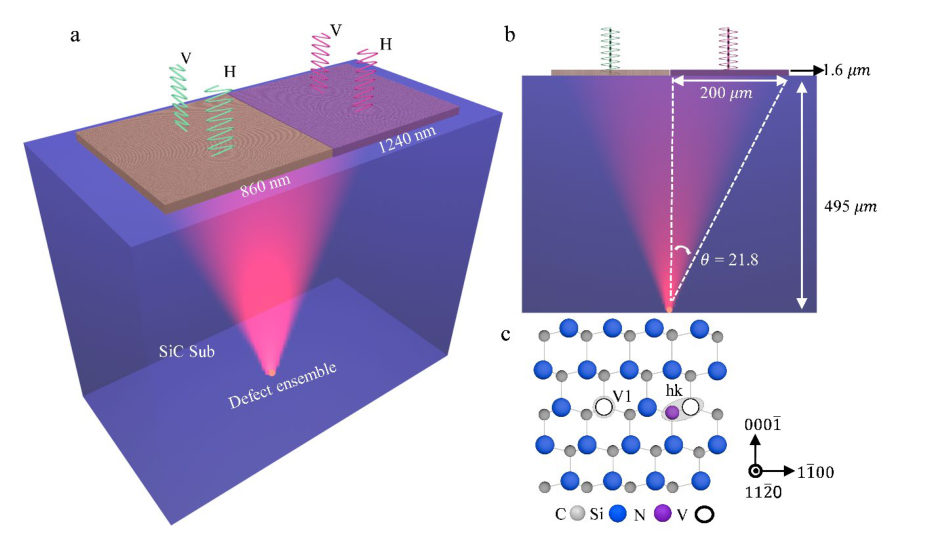
<figcaption class="paper-figure-caption"><b>Fig 1.</b> Figure 1. Design of the monolithically integrated dual-wavelength SiC metalens. (a) A prospective of the monolithic metalens integrated on the top surface of a bulk SiC substrate. The design is to collect the defect ensemble emission from the bottom and realize wavelengths dependent with orthogonal V and H polarized light at 860 nm and 1240 nm, respectively. (b) A side-view of the device. it consists of two adjacent 200 * 200 μm parts designed for 860 nm (left) and 1240 nm (right), respectively. The metalens with a height of 1.6 μm height and a focal length of 495 μm to collect fluorescence from a defect ensemble located on the opposite side of the SiC substrate, corresponding to a...</figcaption>
</figure>
<figure class="paper-figure-card">
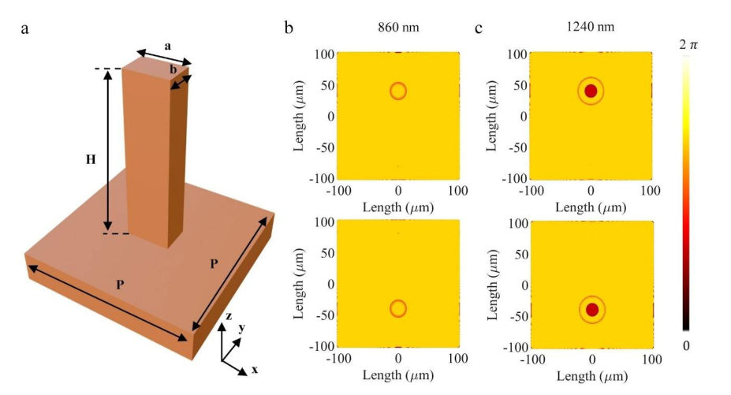
<figcaption class="paper-figure-caption"><b>Fig 2.</b> Figure 2. Metalens simulation. (a)Meta atom parameters used to design the metalens where a and b represent the width and length of the nanopillar and H denotes the height. The lattice period P was chosen based on operating wavelengths of 860 nm or 1240 nm The. (b) Calculated phase distribution for H-polarization (up) and V-polarization (bottom) for 860 nm, respectively. (c) Calculated phase distribution for H-polarization (up) and V-polarization (bottom) for 1240 nm, respectively.</figcaption>
</figure>
<figure class="paper-figure-card">
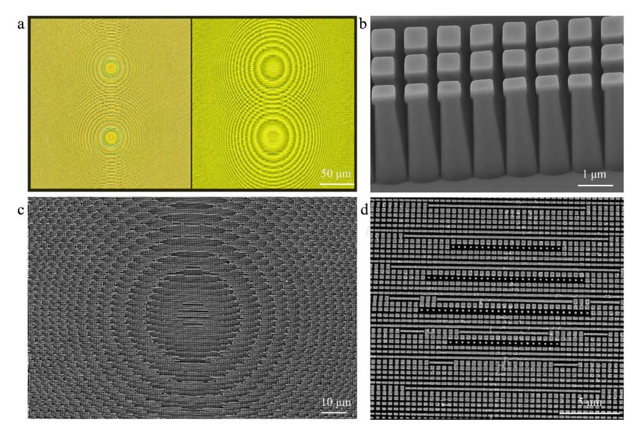
<figcaption class="paper-figure-caption"><b>Fig 3.</b> Figure 3. Metalens fabrication. (a) Optical microscope image of the fabricated monolithic metalens, where the left part is 860 nm and the right part is 1240 nm design, respectively. (b) SEM image of the edge region of the metalens. (c) SEM image of the top area of the 1240 nm section. (d) Zoom-in SEM image of the central region of (c).</figcaption>
</figure>
<figure class="paper-figure-card">
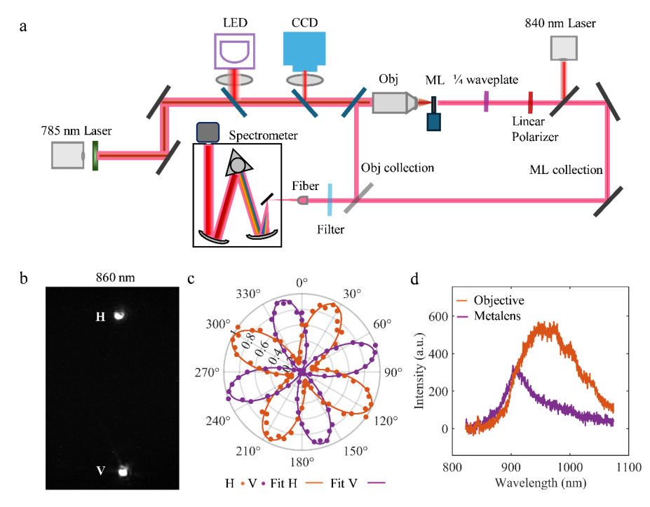
<figcaption class="paper-figure-caption"><b>Fig 4.</b> Figure 4. Characterisation of polarization-selective and efficiency the metalens. (a) Schematics of the set-up. (b) CCD image of the focal plane of the 860 nm design under 840 nm laser illumination, where the up spot represents H-polarized, and bottom spot represents V- polarized. (c) Polarization-resolved intensity of the two focal spots in (b). The scatters are fit to the data showing the two H (orange) and V (purple) polarization states. (d) PL spectra from Vsi in silicon carbide collected through objective (orange) and metalens (purple) at room temperature.</figcaption>
</figure>
<figure class="paper-figure-card">
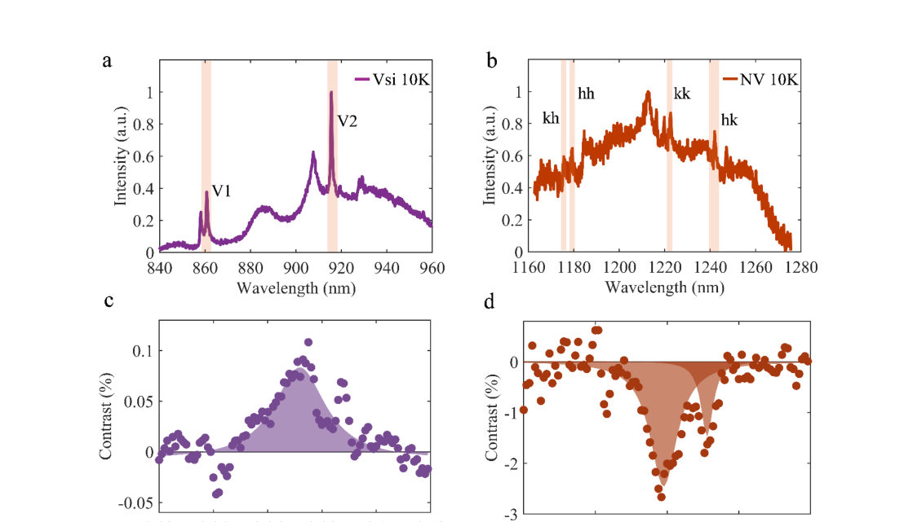
<figcaption class="paper-figure-caption"><b>Fig 5.</b> Figure 5: Spin state readout from the SiC defects through the monolithically integrated metalens. (a) PL spectra collected through the 860 nm design of the metalens under 780 nm laser excitation at 10 K. The orange markers at 861 nm and 917 nm indicate the ZPL of the V1 and V2 silicon-vacancy defects, respectively. (b) PL spectrum collected through the 1240 nm design of the metalens under 980 nm laser excitation at 10 K. The orange markers at 1175.6, 1179.4, 1222.6 and 1242.3 nm indicate the ZPL of the kh, hh, kk, hk nitrogen-vacancy defects, respectively. (c) Room-temperature ODMR spectrum of V1 collected through the metalens. A resonance is observed at ~70 MHz with a contrast of ~0.1%....</figcaption>
</figure>
</div>

<p><strong>Summary.</strong> This paper reports the design and fabrication of monolithic metalenses on SiC capable of operating at dual wavelengths (860 nm and 1240 nm). These devices overcome light extraction limitations from embedded quantum emitters by engineering the wavefront, enabling polarization-selective collection and simultaneous readout of spin states from VSi and NV centers.</p>
<p><strong>Why it may be interesting.</strong> This work directly addresses the integration challenge in quantum photonics by providing a scalable, on-chip optical interface that controls both wavelength and polarization, which is crucial for building quantum networks.</p>
<details>
<summary>Detailed structure</summary>
<p><strong>Main problem.</strong> The primary challenge is efficiently extracting and manipulating the polarization of photons emitted from spin defects (like NV and VSi centers) embedded in Silicon Carbide (SiC) for integrated quantum photonics.</p>
<p><strong>Main result.</strong> The authors successfully designed and fabricated monolithic metalenses on SiC that simultaneously operate at 860 nm and 1240 nm, enabling polarization-selective collection and demonstration of optically detected magnetic resonance.</p>
<p><strong>Method.</strong> The research involved designing subwavelength meta-atoms using rigorous simulations (RCWA, FDTD) and fabricating the dual-wavelength metalenses via top-down nanofabrication techniques.</p>
<p><strong>Model / system.</strong> The physical system is a monolithic metalens fabricated on a bulk SiC substrate, engineered to interact with light emitted from implanted VSi and NV color centers. The design allows independent phase control for orthogonal polarization channels at two distinct near-infrared wavelengths.</p>
<p><strong>Key observables.</strong> Simultaneous collection efficiency at 860 nm and 1240 nm; polarization separation (H vs. V); successful readout via Optically Detected Magnetic Resonance (ODMR).</p>
<p><strong>Important parameters / regimes.</strong> Wavelengths: 860 nm and 1240 nm; Meta-atom height: $1.6 \mu	ext{m}$; Collection NA: 0.97.</p>
<p><strong>Assumptions / limitations.</strong> The design assumes the ability to independently engineer the phase response at two distinct wavelengths using the same SiC material platform.</p>
<p><strong>Figures summary.</strong> Figures show the design concept, calculated phase distributions for H/V polarizations at both wavelengths, and SEM/optical microscope images confirming the fabrication of the monolithic metalens.</p>
<p><strong>Paper structure.</strong> The paper progresses from identifying the need for enhanced light extraction from SiC defects to detailing the metalens design via simulation, describing the nanofabrication process, and finally demonstrating the multifunctional capabilities through PL spectroscopy and ODMR measurements.</p>
</details>
<details>
<summary>Abstract</summary>
<p>Spin defects in silicon carbide (SiC) are promising candidates for integrated quantum photonics, offering long-lived spin states and near-infrared emission suitable for low-loss photonic integration and fibre-based quantum communication. However, light extraction from these defects remains challenging due the relatively high refractive index of SiC. Metalenses offer a compact approach to enhance light collection by engineering the wavefront directly at the material interface. Here, we design and fabricate monolithic metalenses from SiC bulk material that simultaneously operate at 860 and 1240 nm, matching with emission from the nitrogen vacancy and silicon vacancy colour centers. By independently engineering the phase response at both wavelengths, the metalens enables collection and polarization manipulation of the emitted light. We further employ the metalenses to demonstrate optically detected magnetic resonance of both defects simultaneously. These multifunctional metalenses provide a compact optical interface for scalable integrated SiC photonic devices.</p>
</details>
<p><sub><a href="#top">↑ back to top</a></sub></p>

<p><a id="paper-2608.17450"></a></p>
<h3 id="nonlocal-transition-kernel-for-efficient-learning-of-restricted-boltzmann-machines"><a href="http://arxiv.org/abs/2608.17450v1">Nonlocal Transition Kernel for Efficient Learning of Restricted Boltzmann Machines</a></h3>
<p><strong>Authors:</strong> Kaiji Sekimoto, Muneki Yasuda<br>
<strong>Type:</strong> theory · <strong>Category:</strong> disordered systems and neural networks · <strong>PDF:</strong> <a href="https://arxiv.org/pdf/2608.17450v1">https://arxiv.org/pdf/2608.17450v1</a><br>
<strong>Analysis basis:</strong> full PDF text, analyzed in chunks
<strong>Topic relevance:</strong> <code>analog quantum simulation</code> <strong>3/5</strong> · <code>Keldysh / 2PI / non-Gaussian methods</code> <strong>1/5</strong> · <code>correlated / nonlocal dissipation</code> <strong>1/5</strong> · <code>driven-dissipative phase transition</code> <strong>1/5</strong> · <code>methods for driven-dissipative</code> <strong>1/5</strong> · <code>non-equilibrium universality</code> <strong>1/5</strong> · <code>quantum measurements</code> <strong>1/5</strong> · <code>scars &amp; prethermalization</code> <strong>1/5</strong></p>
<div class="figure-strip-hint">↔ Scroll figures horizontally</div>
<div class="paper-figures-scroll">
<figure class="paper-figure-card">
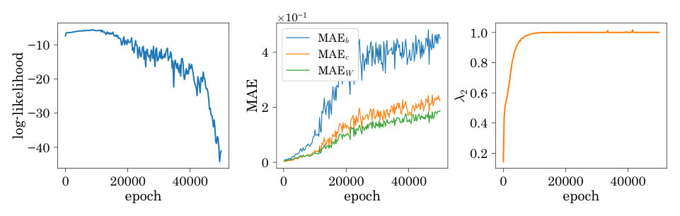
<figcaption class="paper-figure-caption"><b>Fig 1.</b> Figure 2: Log-likelihood, the MAEs, and the second-largest eigenvalue λ2 versus the training epoch for the GenRBM dataset. The results represent averages over 10 experiments.</figcaption>
</figure>
<figure class="paper-figure-card">
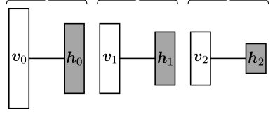
<figcaption class="paper-figure-caption"><b>Fig 2.</b> Figure 3: Illustration of the RBM sequence with L = 2 used in DT. The bottommost RBM corresponds to the training RBM, and the other RBMs are used for sampling.</figcaption>
</figure>
<figure class="paper-figure-card">

<figcaption class="paper-figure-caption"><b>Fig 3.</b> Figure 2 shows three quantities characterizing the learning behavior as functions of the training epoch. As training progressed, the MAEs increased, implying that the parameter gradients were estimated less accurately. This deterioration in gradient estimation, in turn, led to a decrease in the log-likelihood. Moreover, the estimator of λ2 converged to one as the training began to fail. As the relaxation time increased, the sampling became more strongly dependent on the initial states, making it more difficult to sample from the target distribution within a limited number of sampling steps. These results suggest that the resulting degradation in the sampling quality of BGS caused the...</figcaption>
</figure>
<figure class="paper-figure-card">
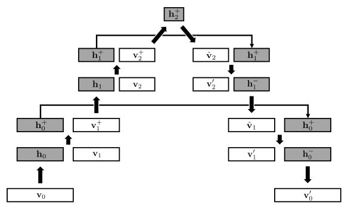
<figcaption class="paper-figure-caption"><b>Fig 4.</b> Figure 4: Illustration of the sampling procedure for the proposed transition kernel on an RBM sequence with L = 2. The upward pass sequentially applies the swap operations from lower to upper RBMs, followed by a one-step BGS transition at the topmost RBM, and the downward pass applies the swap operations in the reverse order of the upward pass.</figcaption>
</figure>
<figure class="paper-figure-card">
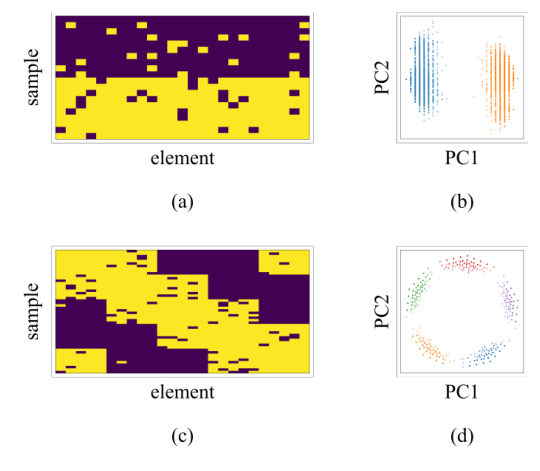
<figcaption class="paper-figure-caption"><b>Fig 5.</b> Figure 5: Visualization of low-rank synthetic datasets with data dimension n = 25: (a) samples and (b) a PCA projection for the islands dataset with a = 0.4, and (c) samples and (d) a PCA projection for the pentagon dataset with κ = 6.</figcaption>
</figure>
</div>

<p><strong>Summary.</strong> This paper addresses the computational difficulty of training Restricted Boltzmann Machines by proposing a novel nonlocal transition kernel. This kernel improves upon existing methods (BGS and DT) by enabling efficient, single-step nonlocal moves across the model sequence. The result demonstrates superior sampling quality and learning stability, advancing the field of energy-based model learning.</p>
<p><strong>Why it may be interesting.</strong> While focused on classical ML, the core mathematical tools—analyzing mixing times, spectral gaps ($\lambda_2$), and constructing invariant transition kernels—are directly analogous to analyzing thermalization, mixing, and convergence in quantum many-body systems or quantum state preparation.</p>
<details>
<summary>Detailed structure</summary>
<p><strong>Main problem.</strong> Learning Restricted Boltzmann Machines (RBMs) is computationally difficult because evaluating the required expectations is generally intractable.</p>
<p><strong>Main result.</strong> The proposed nonlocal transition kernel achieves higher sampling quality and stability for RBM learning compared to standard methods like BGS and DT.</p>
<p><strong>Method.</strong> The authors propose a novel transition kernel with a round-trip structure over the RBM sequence used in Deep Tempering (DT).</p>
<p><strong>Model / system.</strong> The model is the Restricted Boltzmann Machine (RBM), an energy-based latent-variable model defined by a Hamiltonian $E(v, h; 	heta)$. Learning involves approximating expectations over the RBM joint distribution.</p>
<p><strong>Key observables.</strong> Sampling Quality, Log-likelihood ($\ell(	heta)$), Total Variation (TV) distance, and the second-largest eigenvalue ($\lambda_2$) of the transition matrix.</p>
<p><strong>Important parameters / regimes.</strong> The number of auxiliary RBMs ($L$) in the tempering sequence, and the number of sampling steps ($s$).</p>
<p><strong>Assumptions / limitations.</strong> The standard BGS kernel is local, and Deep Tempering (DT) requires multiple steps for nonlocal moves, which the proposed kernel aims to circumvent.</p>
<p><strong>Figures summary.</strong> Figures illustrate schematic RBM architectures and show comparisons of transition trajectories (BGS, DT, proposed kernel) and the decay of TV distances across different datasets.</p>
<p><strong>Paper structure.</strong> The paper first establishes the computational challenge of RBM learning using BGS. It then introduces DT and the limitations of local transitions. The core contribution is the derivation and analysis of the proposed nonlocal transition kernel, followed by rigorous comparison against BGS and DT regarding sampling quality and learning stability.</p>
</details>
<details>
<summary>Abstract</summary>
<p>Learning restricted Boltzmann machines (RBMs) is computationally challenging because it requires expectations whose exact evaluation is generally intractable. The expectations are typically evaluated using a sampling approximation based on blocked Gibbs sampling (BGS), which is a local Markov chain Monte Carlo transition kernel. However, the locality of BGS can lead to poor sampling quality when the RBM has high energy barriers, thereby degrading learning performance. Deep tempering (DT), which performs parallel tempering over a sequence of learnable RBMs including the training RBM, alleviates this locality issue. However, DT algorithmically requires multiple steps to move through the RBM sequence to achieve a nonlocal transition. In this paper, we propose a transition kernel defined over the RBM sequence used in DT. The proposed kernel has a round-trip structure over the sequence, enabling nonlocal moves within a single transition while leaving the RBM sequence invariant. Numerical experiments show that the proposed kernel performs nonlocal transitions more frequently and achieves higher sampling quality with fewer transitions than BGS and DT. We further verify that learning based on the proposed kernel is more stable and mitigates the training failures observed with BGS- and DT-based learning.</p>
</details>
<p><sub><a href="#top">↑ back to top</a></sub></p>

<p><a id="paper-2608.17012"></a></p>
<h3 id="statistically-steady-holographic-quantum-turbulence-hyperuniform-vortex-matter-and-crossover"><a href="http://arxiv.org/abs/2608.17012v1">Statistically Steady Holographic Quantum Turbulence: Hyperuniform Vortex Matter and Crossover</a></h3>
<p><strong>Authors:</strong> Yu-Ping An, Peng-Bo Ding, Zhen-Han Jin, Li Li<br>
<strong>Type:</strong> theory · <strong>Category:</strong> statistical mechanics · <strong>PDF:</strong> <a href="https://arxiv.org/pdf/2608.17012v1">https://arxiv.org/pdf/2608.17012v1</a><br>
<strong>Analysis basis:</strong> full PDF text, analyzed in chunks
<strong>Topic relevance:</strong> <code>driven-dissipative phase transition</code> <strong>3/5</strong> · <code>non-equilibrium universality</code> <strong>3/5</strong> · <code>Keldysh / 2PI / non-Gaussian methods</code> <strong>2/5</strong> · <code>methods for driven-dissipative</code> <strong>2/5</strong></p>
<div class="figure-strip-hint">↔ Scroll figures horizontally</div>
<div class="paper-figures-scroll">
<figure class="paper-figure-card">
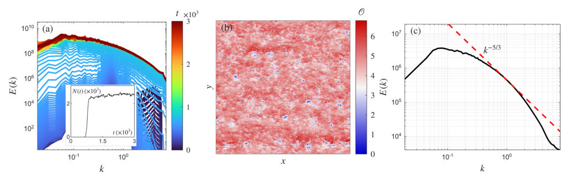
<figcaption class="paper-figure-caption"><b>Fig 1.</b> FIG. 1. Steady-state establishment and kinetic energy spectrum. (a) Time evolution of the kinetic energy spectrum and total vortex number N(t) (inset), showing the system reaches a statistical steady state for t ≳1000 with N ≈2500. (b) Snapshot of the order-parameter magnitude O at t = 3000 over a 500 × 500 domain, revealing a dense, spatially homogeneous vortex ensemble with no macroscopic same-sign clusters. (c) Time-averaged total kinetic energy spectrum E(k) computed from 200 snapshots in the steady-state window t ∈[1000, 3000]. An apparent narrow k−5/3 region appears between the k−1 single-vortex and k−3 core regimes; its physical nature is scrutinized in Figs. 2 and 3 below....</figcaption>
</figure>
<figure class="paper-figure-card">
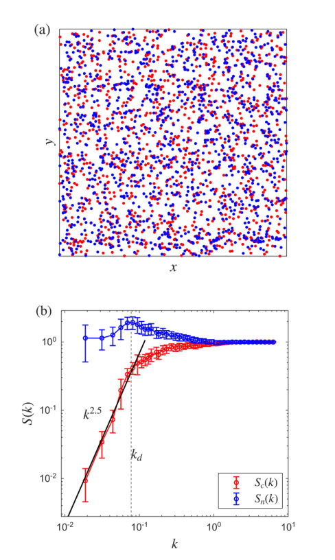
<figcaption class="paper-figure-caption"><b>Fig 2.</b> FIG. 2. Disordered hyperuniformity of the vortex charge distribution. (a) Snapshot of the vortex configuration at t = 3000; red and blue markers denote positive and neg- ative circulation, respectively. (b) Time-averaged structure factors. The number structure factor Sn(k) (blue) does not vanish as k →0, indicating no long-range number order. The charge structure factor Sc(k) (red) exhibits a clear power-law suppression Sc(k) ∝kα with α ≈2.5 as k →0, demonstrat- ing Class I disordered hyperuniformity. The peak in Sn(k) at kd ≃0.08 (vertical line) corresponds to a characteristic cluster spacing d = 2π/kd ≃80. Error bars denote standard deviations across 200 time slices.</figcaption>
</figure>
<figure class="paper-figure-card">
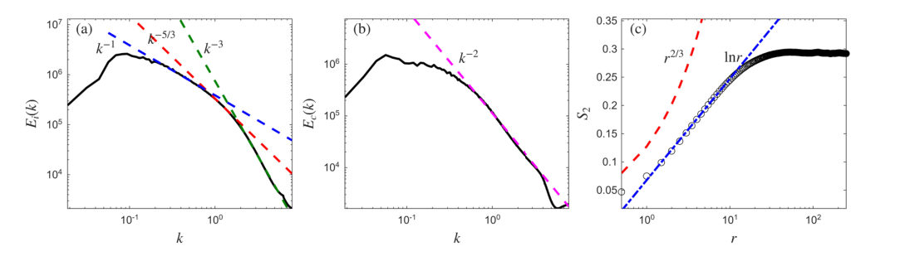
<figcaption class="paper-figure-caption"><b>Fig 3.</b> FIG. 3. Dual-space spectral analysis resolves the scaling controversy. (a) Time-averaged incompressible kinetic energy spectrum Ei(k), showing the k−1 isolated-vortex regime, the narrow k−5/3 crossover, and the k−3 core-scale regime. (b) Time-averaged compressible spectrum Ec(k), which follows a k−2 scaling due to shock-like acoustic waves from vortex–antivortex annihilations. (c) Second-order velocity structure function S2(r). This semi-log plot reveals a robust linear dependence, establishing S2(r) ∝ ln r (blue dashed)—the unique real-space signature of a k−1 spectrum. This constitutes knockout, parameter-free evidence that the apparent k−5/3 feature (corresponding to S2 ∝r2/3) is a...</figcaption>
</figure>
<figure class="paper-figure-card">

<figcaption class="paper-figure-caption"><b>Fig 4.</b> Figure 3(c) presents the steady-state time-averaged</figcaption>
</figure>
</div>

<p><strong>Summary.</strong> This work investigates quantum turbulence in a holographic superfluid model, establishing a statistically steady state driven by continuous instability. The key findings are the demonstration of Class I hyperuniformity in the vortex charge distribution and the definitive ruling out of a true Kolmogorov inertial cascade, suggesting energy transport mechanisms fundamentally different from weakly coupled superfluids.</p>
<p><strong>Why it may be interesting.</strong> It provides a rigorous theoretical framework for understanding energy dissipation and long-range order in strongly coupled, non-equilibrium quantum systems, directly impacting models of superfluids and quantum turbulence.</p>
<details>
<summary>Detailed structure</summary>
<p><strong>Main problem.</strong> The difficulty in establishing robust statistical steady states in quantum turbulence, which prevents clear identification of universal vortex organization and kinetic scaling laws.</p>
<p><strong>Main result.</strong> The system exhibits Class I disordered hyperuniformity in its topological charge structure factor, and the apparent Kolmogorov $k^{-5/3}$ scaling is shown to be a narrow crossover, not a true inertial cascade.</p>
<p><strong>Method.</strong> The authors use holographic superfluid models, driving the system to a steady state via Landau instability, and analyzing both momentum-space (structure factors) and real-space (structure functions) statistics.</p>
<p><strong>Model / system.</strong> The study analyzes two-dimensional holographic superfluid turbulence, modeled using the holographic Abelian-Higgs model, focusing on the dynamics of quantized vortices in a strongly driven, far-from-equilibrium setting.</p>
<p><strong>Key observables.</strong> Topological charge structure factor $S_c(k)$, kinetic energy spectrum $E(k)$, and real-space second-order structure function $S_2(r)$.</p>
<p><strong>Important parameters / regimes.</strong> The analysis focuses on the steady state achieved by continuous Landau-instability driving, contrasting with transient decay regimes.</p>
<p><strong>Assumptions / limitations.</strong> The analysis relies on the holographic duality framework to handle strong coupling effects in the quantum fluid.</p>
<p><strong>Figures summary.</strong> Figures illustrate the time evolution towards a steady state, the power-law decay of $S_c(k)$ indicating hyperuniformity, and the structure function $S_2(r)$ confirming $\ln r$ scaling over $r^{2/3}$ scaling.</p>
<p><strong>Paper structure.</strong> The paper establishes the steady state, characterizes the topological order via $S_c(k)$ (hyperuniformity), and then uses $S_2(r)$ and $E(k)$ to resolve the scaling controversy by showing the $k^{-5/3}$ feature is a crossover.</p>
</details>
<details>
<summary>Abstract</summary>
<p>A long-standing obstacle in quantum turbulence has been the difficulty of sustaining robust statistical steady states, preventing unambiguous identification of universal vortex organization and kinetic scaling. We construct such a steady state in two-dimensional holographic superfluid turbulence by continuous Landau-instability driving, sustaining ${\sim}2500$ vortices free from transient artifacts. The topological charge structure factor $S_c(k)$ reveals Class I disordered hyperuniformity with $S_c(k)\propto k^{α>1}$ as $k\to0$, where $k$ is the wavenumber. This constitutes the strongest long-range order of its kind and its first observation in a strongly driven, far-from-equilibrium quantum fluid with topological defects as the organizing principle, establishing a novel non-equilibrium vortex phase. Exploiting this platform, we resolve the scaling controversy: the apparent $k^{-5/3}$ signature in the kinetic energy spectrum is a narrow crossover between the $k^{-1}$ single-vortex and $k^{-3}$ core regimes, not a genuine Kolmogorov inertial range. The real-space second-order structure function provides decisive evidence via $S_2(r)\propto \ln r$ where $r$ is the spatial separation, with no $r^{2/3}$ Kolmogorov scaling, ruling out a true inertial cascade. These findings reveal that strongly coupled quantum turbulence lacks an inverse cascade due to the absence of macroscopic Onsager clusters, demonstrating energy transport fundamentally distinct from weakly coupled superfluids.</p>
</details>
<p><sub><a href="#top">↑ back to top</a></sub></p>

<p><a id="paper-2608.17372"></a></p>
<h3 id="from-the-universal-lindblad-equation-to-boltzmann-equations-in-qgp-quarkonium-dynamics"><a href="http://arxiv.org/abs/2608.17372v1">From the universal Lindblad equation to Boltzmann equations: in-QGP quarkonium dynamics</a></h3>
<p><strong>Authors:</strong> Aoumeur Daddi Hammou, Pol Bernard Gossiaux<br>
<strong>Type:</strong> theory · <strong>Category:</strong> statistical mechanics · <strong>PDF:</strong> <a href="https://arxiv.org/pdf/2608.17372v1">https://arxiv.org/pdf/2608.17372v1</a><br>
<strong>Analysis basis:</strong> full PDF text, analyzed in chunks
<strong>Topic relevance:</strong> <code>methods for driven-dissipative</code> <strong>3/5</strong> · <code>Keldysh / 2PI / non-Gaussian methods</code> <strong>2/5</strong> · <code>correlated / nonlocal dissipation</code> <strong>1/5</strong> · <code>driven-dissipative phase transition</code> <strong>1/5</strong> · <code>non-equilibrium universality</code> <strong>1/5</strong> · <code>quantum measurements</code> <strong>1/5</strong></p>
<div class="figure-strip-hint">↔ Scroll figures horizontally</div>
<div class="paper-figures-scroll">
<figure class="paper-figure-card">

<figcaption class="paper-figure-caption"><b>Fig 1.</b> Low-resolution page preview, page 2</figcaption>
</figure>
<figure class="paper-figure-card">

<figcaption class="paper-figure-caption"><b>Fig 2.</b> Low-resolution page preview, page 3</figcaption>
</figure>
<figure class="paper-figure-card">

<figcaption class="paper-figure-caption"><b>Fig 3.</b> Low-resolution page preview, page 4</figcaption>
</figure>
<figure class="paper-figure-card">

<figcaption class="paper-figure-caption"><b>Fig 4.</b> Low-resolution page preview, page 5</figcaption>
</figure>
<figure class="paper-figure-card">

<figcaption class="paper-figure-caption"><b>Fig 5.</b> Low-resolution page preview, page 6</figcaption>
</figure>
</div>

<p><strong>Summary.</strong> This work provides a rigorous derivation connecting the quantum description of quarkonium in the QGP, governed by Lindblad equations, to the semiclassical Boltzmann transport equations. By systematically taking the semiclassical limit, the authors establish a more general theoretical foundation for describing heavy-quark pair evolution in the plasma. This advancement is significant because it provides transport equations valid beyond previous small-dipole approximations.</p>
<p><strong>Why it may be interesting.</strong> The systematic derivation of transport equations from a full quantum master equation formalism is highly relevant for understanding non-equilibrium dynamics in strongly coupled quantum systems, bridging quantum optics/open systems theory with kinetic theory.</p>
<details>
<summary>Detailed structure</summary>
<p><strong>Main problem.</strong> The paper aims to develop a unified theoretical framework connecting the quantum master equation description of quarkonium dynamics in the QGP to the semiclassical Boltzmann transport equations.</p>
<p><strong>Main result.</strong> The authors successfully derive the Boltzmann transport equations directly from the universal Lindblad framework, establishing a more general and systematic foundation for semiclassical transport beyond the small-dipole approximation.</p>
<p><strong>Method.</strong> The core method involves deriving the universal Lindblad equations (ULEs) within pNRQCD and then systematically taking the semiclassical limit of these ULEs to obtain the corresponding Boltzmann equations.</p>
<p><strong>Model / system.</strong> The system is quarkonium ($ ext{Q}ar{  ext{Q}}$) evolving in the Quark-Gluon Plasma (QGP). The dynamics are modeled using coupled singlet-octet Universal Lindblad Equations (ULEs) derived from Non-Relativistic QCD (NRQCD) effective field theory.</p>
<p><strong>Key observables.</strong> The evolution of the density matrix ($
ho(t)$), the singlet ($
ho_s$) and octet ($
ho_o$) components, and the resulting transport coefficients.</p>
<p><strong>Important parameters / regimes.</strong> The theory is applicable across regimes, from quantum Brownian to quantum optical, and is shown to be valid beyond the small-dipole approximation.</p>
<p><strong>Assumptions / limitations.</strong> The derivation involves taking the semiclassical limit and making approximations (like neglecting recoil energy in some steps) to transition from the quantum master equation to the classical transport equation.</p>
<p><strong>Figures summary.</strong> The notes do not provide a summary of figures, but the text details the mathematical derivation steps connecting ULEs to Boltzmann equations.</p>
<p><strong>Paper structure.</strong> The paper progresses by first establishing the ULEs in pNRQCD, comparing them to NRQCD results in the small-dipole limit, and finally deriving the semiclassical limit to obtain the coupled singlet-octet Boltzmann equations, highlighting quantum corrections.</p>
</details>
<details>
<summary>Abstract</summary>
<p>Recently, a set of coupled singlet-octet universal Lindblad equations (ULEs) was derived within the framework of non-relativistic QCD (NRQCD) to describe quarkonium dynamics in the quark-gluon plasma (QGP). These equations provide a unified quantum description spanning the quantum Brownian and quantum optical regimes. In this work, we further develop this framework and establish its connection with semiclassical transport. We first derive the universal Lindblad equations within the potential non-relativistic QCD (pNRQCD) effective field theory and show that they coincide with the small-dipole limit of the NRQCD ULEs. We then derive the semiclassical limit of the NRQCD ULEs, obtaining a set of coupled singlet-octet Boltzmann equations. To our knowledge, this is the first derivation of Boltzmann transport equations directly from the universal Lindblad framework. The resulting equations are valid beyond the small-dipole approximation, allowing the evolution of heavy-quark pairs from compact to widely separated configurations. Taking their small-dipole limit allows a direct comparison with the Boltzmann equations of Yao et al. [Phys. Rev. D 99, 096028 (2019)], which were derived within pNRQCD from the Davies secular equation, relying on the rotating-wave approximation (RWA). While the singlet equations are found to be in near-complete agreement, the octet equation contains an additional collision term describing transitions within the continuum of octet scattering states, which is absent from the RWA-based derivation. Finally, we derive the leading quantum correction to the singlet Boltzmann equation. Our results establish a more general and systematic theoretical foundation for the semiclassical transport description of quarkonium in the QGP.</p>
</details>
<p><sub><a href="#top">↑ back to top</a></sub></p>

<p><a id="paper-2608.17094"></a></p>
<h3 id="lie-algebraic-classical-simulation-of-bosonic-systems-beyond-gaussian-dynamics"><a href="http://arxiv.org/abs/2608.17094v1">Lie-Algebraic Classical Simulation of Bosonic Systems Beyond Gaussian Dynamics</a></h3>
<p><strong>Authors:</strong> Adelina Bärligea, Timothy Heightman, Jakob S. Kottmann, Antonio Acín<br>
<strong>Type:</strong> theory · <strong>Category:</strong> numerical methods · <strong>PDF:</strong> <a href="https://arxiv.org/pdf/2608.17094v1">https://arxiv.org/pdf/2608.17094v1</a><br>
<strong>Analysis basis:</strong> full PDF text, analyzed in chunks
<strong>Topic relevance:</strong> <code>Keldysh / 2PI / non-Gaussian methods</code> <strong>3/5</strong> · <code>analog quantum simulation</code> <strong>3/5</strong> · <code>methods for driven-dissipative</code> <strong>3/5</strong></p>
<div class="figure-strip-hint">↔ Scroll figures horizontally</div>
<div class="paper-figures-scroll">
<figure class="paper-figure-card">

<figcaption class="paper-figure-caption"><b>Fig 1.</b> FIG. 1. Reachable-operator-module simulation workflow. (a) For a circuit U(θ) = UL · · · U1 with layers Uℓ= e−iθℓHkℓas in Eq. (1), the mean-value problem is evaluated by propagating the target observable backwards through the circuit in the Heisenberg picture, as in Eq. (2). (b) The Hermitian DLA g is generated from the Hamiltonians by repeated applications of adH(A) = i[H, A] (see Eqs. (3) and (4)), whereas the reachable operator module V(O) is seeded by the observable and is the smallest real operator space containing O that is invariant under every generator action (see Definition 1). The overlap between g and V(O) is schematic: there is no general inclusion relation between them, and...</figcaption>
</figure>
<figure class="paper-figure-card">

<figcaption class="paper-figure-caption"><b>Fig 2.</b> FIG. 2. Exact dynamics on bounded sector unions. (a) Two-photon correlator under a quadratic Hamiltonian and the same Hamiltonian after adding cross-Kerr interactions; markers are independent truncated-Fock calculations for the interacting dynamics. (b) A coherent superposition across N = 0, 1, 2 and its sector-dephased counterpart give identical number readouts but different quadrature readouts. (c) Median sparse-propagation time, with interquartile ranges over seven repetitions after warm-up, for states in H≤Nmax with Nmax = 1, . . . , 5. The sector union Hilbert space has exact dimension n+Nmax Nmax  . Dashed curves show this exact finite-n dependence, normalized at the largest mode...</figcaption>
</figure>
<figure class="paper-figure-card">

<figcaption class="paper-figure-caption"><b>Fig 3.</b> FIG. 3. Repulsively bound photon pairs in the two-photon Bose–Hubbard chain. (a,b) Local density ⟨ˆnj(t)⟩after initializing both photons at the central site of an open n = 41 chain, shown for U = 0J and U = 8J on a shared color scale. (c) Doublon fraction, equal to the probability that both photons occupy the same site, for U/J = 0, 2, 8. (d) Effective doublon hopping Jeff = W/4, extracted from the width W of the isolated repulsive bound band on periodic chains with n = 101, 201, 401. The dashed line shows the strong-coupling prediction 2J2/U [87]. A log–log fit for n = 401 over U/J ≥8 gives the exponent −0.9711 ± 0.0068; at U/J = 48, UJeff/J2 = 1.9965. The inset sketches the local hopping...</figcaption>
</figure>
<figure class="paper-figure-card">

<figcaption class="paper-figure-caption"><b>Fig 4.</b> FIG. 4. Controlled photon-sector leakage under squeezing. (a) Convergence of the number-conserving correlator ⟨ˆn0ˆn1⟩with band depth k for n = 2, U/J = 2, and r/J = 0.8. The k = 8 reference agrees with the next band within 1.48 × 10−14. (b) Maximum readout error versus squeezing strength; open markers indicate the points included in the power-law fits. (c) Median propagation times and interquartile ranges over seven repetitions. Dashed curves show the exact retained-sector dimensions dk(n), normalized at the largest mode count for each k; their asymptotic degrees are 2 + 2k. (d) Fitted exponents for the leakage norm (triangles) and number-conserving readout error (circles), compared with...</figcaption>
</figure>
<figure class="paper-figure-card">

<figcaption class="paper-figure-caption"><b>Fig 5.</b> FIG. 5. State-dependent operator spreading in the two-photon Bose–Hubbard chain. Time is measured in units of 1/J. (a) Maximum sitewise deviation from an independent truncated-Fock calculation at n = 5 and U = 8J. The interacting fixed-sector result agrees to numerical precision, whereas the U = 0J noninteracting quadratic baseline shows the effect of omitting the interaction. The inset sketches the hopping J, onsite interaction U, and operators ˆnc and ˆni(t) entering the commutator. (b,c) log10[Cψ(i, t) + 10−12] for n = 400 at U = 0J and U = 8J, respectively, with the central site c marked by the dotted line and a shared color scale. (d) Fitted velocity of the Cψ = 10−5 threshold front...</figcaption>
</figure>
</div>

<p><strong>Summary.</strong> This paper extends Lie-algebraic simulation techniques to bosonic systems, overcoming previous limitations that restricted the method to Gaussian dynamics. By focusing on the finite-dimensional subspace spanned by observables (the reachable module), the authors prove that many non-Gaussian bosonic dynamics can be simulated exactly in polynomial time. This provides a general tool for classifying and approximating tractable quantum dynamics in photonics and condensed matter systems.</p>
<p><strong>Why it may be interesting.</strong> This work provides a powerful, systematic theoretical framework for determining the classical simulability boundary for complex, non-Gaussian bosonic quantum dynamics, which is crucial for quantum optics and quantum simulation.</p>
<details>
<summary>Detailed structure</summary>
<p><strong>Main problem.</strong> The paper addresses the challenge of developing an exact, polynomial-time classical simulation method for bosonic quantum systems that goes beyond the limitations of standard Gaussian dynamics.</p>
<p><strong>Main result.</strong> The authors establish a unified formalism showing that exact simulation is possible for many non-Gaussian bosonic dynamics by restricting the computation to the finite-dimensional, observable-seeded reachable operator module.</p>
<p><strong>Method.</strong> The core method involves leveraging Lie-algebraic simulation by propagating observables through the invariant operator space defined by the system's generators, rather than simulating the full state evolution.</p>
<p><strong>Model / system.</strong> The focus is on bosonic systems (e.g., photons, phonons) described by infinite-dimensional Fock spaces, extending applicability to interacting non-Gaussian Hamiltonians like Kerr and pair-hopping terms.</p>
<p><strong>Key observables.</strong> Expectation values, fixed-order correlation functions (including multi-time and OTOCs), and parameter gradients are shown to be efficiently computable.</p>
<p><strong>Important parameters / regimes.</strong> The key parameter is the polynomial dimension of the observable's reachable operator module, which dictates the tractability of the simulation.</p>
<p><strong>Assumptions / limitations.</strong> The method assumes that the relevant observable module has a finite, polynomial dimension, allowing the infinite-dimensional dynamics to be contracted into a finite matrix representation.</p>
<p><strong>Figures summary.</strong> The notes describe a workflow illustrating the observable-seeded construction of the reachable operator module, showing how mean values are propagated backwards and how the adjoint action generates the invariant module.</p>
<p><strong>Paper structure.</strong> The paper first identifies the failure of conventional Lie-algebraic methods for bosons, then introduces the observable-seeded reachable module, and finally demonstrates its applicability across three regimes: quadratic dynamics, U(1) symmetry sectors, and nilpotent phase families.</p>
</details>
<details>
<summary>Abstract</summary>
<p>Classical simulability is ultimately determined by both the dynamics of a quantum system and the observables being evaluated. Lie-algebraic simulation exploits the latter to make exact polynomial-time classical simulations by propagating observables through low-dimensional invariant operator spaces. However, its conventional formulation in terms of polynomial-dimensional dynamical Lie algebras does not directly accommodate bosonic systems as their algebras are neither compact nor semisimple. In this contribution, we overcome this limitation, making bosonic systems accessible to the Lie-algebraic programme of exact polynomial-time classical simulation. We prove that expectation values, fixed-order correlation functions, including multi-time correlators and out-of-time-ordered correlators, and gradients are efficiently computable whenever their operator modules have polynomial dimension. This recovers Gaussian quantum optics and extends it to non-Gaussian input states, while identifying exact polynomial regimes of interacting non-Gaussian dynamics including bounded-photon Kerr and pair-hopping Hamiltonians and nilpotent polynomial phase dynamics. We show that unlike in the finite-dimensional spin and fermionic setting treated previously, a finite-dimensional bosonic generator algebra alone does not guarantee finite observable dynamics. We further derive a controlled perturbative hierarchy for squeezing beyond exact sector confinement and confirm the predicted error orders numerically. We also evaluate operator spreading on interacting chains of up to $400$ modes and connect a topological doublon band with flux-reversed edge motion. These results provide a unified formalism for classifying, discovering, and systematically approximating tractable bosonic quantum dynamics with classical polynomial-time simulation.</p>
</details>
<p><sub><a href="#top">↑ back to top</a></sub></p>

<p><a id="paper-2608.17424"></a></p>
<h3 id="many-anyon-braiding-in-non-abelian-fractional-quantum-hall-effect-with-hybrid-monte-carlo-simulation"><a href="http://arxiv.org/abs/2608.17424v1">Many-Anyon Braiding in Non-Abelian Fractional Quantum Hall Effect with Hybrid Monte Carlo Simulation</a></h3>
<p><strong>Authors:</strong> Ting-Tung Wang, Ha Quang Trung, Qianhui Xu, Min Long, Bo Yang, Zi Yang Meng<br>
<strong>Type:</strong> theory · <strong>Category:</strong> strongly correlated electrons · <strong>PDF:</strong> <a href="https://arxiv.org/pdf/2608.17424v1">https://arxiv.org/pdf/2608.17424v1</a><br>
<strong>Analysis basis:</strong> full PDF text, analyzed in chunks
<strong>Topic relevance:</strong> <code>analog quantum simulation</code> <strong>3/5</strong> · <code>methods for driven-dissipative</code> <strong>3/5</strong> · <code>Full counting statistics</code> <strong>1/5</strong> · <code>Keldysh / 2PI / non-Gaussian methods</code> <strong>1/5</strong> · <code>quantum measurements</code> <strong>1/5</strong></p>
<div class="figure-strip-hint">↔ Scroll figures horizontally</div>
<div class="paper-figures-scroll">
<figure class="paper-figure-card">

<figcaption class="paper-figure-caption"><b>Fig 1.</b> FIG. 1. Improved convergence of the rotational braid- ing scheme. Schematics of (a) the classical and (b) the ro- tational braiding schemes. The blue dots mark the quasihole positions, while the red arrows indicate their braiding trajec- tories. (c) Finite-size dependence of the relative eigenvalue phase α for the classical scheme (blue circles) and rotational scheme (orange triangles). The horizontal dashed lines de- note the corresponding theoretical predictions, α = −π/2 and α = −2π/3, respectively.</figcaption>
</figure>
<figure class="paper-figure-card">

<figcaption class="paper-figure-caption"><b>Fig 2.</b> FIG. 2. Fusion channel selection. The electron density on the sphere for the MR state with 60 electrons and 4 quasi- holes, 2 at the north pole and the other 2 located at the same latitude. The quasiholes at the north pole fuse and form a (a) 1-anyon or (b) ψ-anyon.</figcaption>
</figure>
<figure class="paper-figure-card">

<figcaption class="paper-figure-caption"><b>Fig 3.</b> FIG. 3. Numerical results for many-anyon braiding in the Moore–Read state. Panels (a) and (b) show the four- quasihole geometry and the resulting statistical Berry phase γstat, respectively. Panels (c) and (d) show the corresponding six-quasihole geometry and the relative eigenvalue phase α of the non-Abelian braiding matrix. The horizontal lines are the theoretical prediction in the two limits shown in Eqs. (3) and (4). In both geometries, two quasiholes are fused at the north pole, while the remaining quasiholes are braided in the presence of pinning potentials of strength h. They share the same legend in panel (b).</figcaption>
</figure>
</div>

<p><strong>Summary.</strong> This work uses advanced numerical simulations to study non-Abelian braiding in the Fractional Quantum Hall Effect using the Moore-Read model. By comparing different braiding paths and incorporating external potentials, the authors show that rotational braiding is robust against finite-size errors. Crucially, they demonstrate that the braiding statistics can be actively controlled by tuning the balance between electron-electron interactions and local trapping fields.</p>
<p><strong>Why it may be interesting.</strong> The demonstration of how external potentials can tune the fusion channel, thereby controlling the non-Abelian braiding statistics, provides a concrete theoretical pathway for engineering topological quantum states in solid-state systems.</p>
<details>
<summary>Detailed structure</summary>
<p><strong>Main problem.</strong> To compute and analyze the many-anyon non-Abelian braiding matrices associated with different braiding schemes of Moore-Read quasiholes, accounting for finite-size effects and external interactions.</p>
<p><strong>Main result.</strong> The rotational braiding scheme is shown to be significantly more robust against finite-size effects than classical braiding, and the braiding statistics can be controlled by tuning the competition between electron-electron interactions and local trapping potentials.</p>
<p><strong>Method.</strong> The Hybrid Monte Carlo (HMC) method is employed to efficiently compute the braiding matrices by projecting the Hamiltonian onto the quasihole manifold and analyzing the adiabatic evolution operator.</p>
<p><strong>Model / system.</strong> The study models the Non-Abelian Fractional Quantum Hall Effect using the Moore-Read (MR) state for quasiholes. The Hamiltonian includes terms for the MR state, Coulomb interaction, and local electrostatic trapping potentials.</p>
<p><strong>Key observables.</strong> Non-Abelian braiding matrices, the relative eigenvalue phase ($\alpha = \lambda_1 / \lambda_2$), and the statistical Berry phase ($\gamma_{	ext{stat}}$).</p>
<p><strong>Important parameters / regimes.</strong> The strength of the local pinning potential ($h$), the number of quasiholes ($2n=4, 6$), and the separation distance of the anyons.</p>
<p><strong>Assumptions / limitations.</strong> The model wavefunctions are not exact eigenstates of realistic Hamiltonians, and the analysis relies on the assumption that the system remains adiabatically connected to the model Hamiltonian.</p>
<p><strong>Figures summary.</strong> Figures compare the finite-size dependence of the relative eigenvalue phase ($\alpha$) for classical versus rotational braiding schemes, showing the superior convergence of the rotational scheme. Other figures illustrate how the fusion channel selection dictates the braiding statistics.</p>
<p><strong>Paper structure.</strong> The paper systematically compares different braiding protocols (classical vs. rotational) and investigates the influence of external potentials (trapping) on the resulting braiding matrices. It details the mathematical framework using the evolution operator and the key observable $\alpha$.</p>
</details>
<details>
<summary>Abstract</summary>
<p>We employ the hybrid Monte Carlo method to efficiently compute the many-anyon non-Abelian braiding matrices associated with different braiding schemes of the Moore-Read quasiholes. A novel proposal in this work is that anyon braiding schemes based on a global rotation are robust against finite-size effects, as demonstrated by benchmarking their errors in the braiding matrix against those of a simple two-anyon exchange. Moreover, we investigate how electron-electron interactions and local electrostatic trapping potentials influence the energetic preference of different fusion channels. Their effect on the non-Abelian braiding matrices has been verified, a surprising phenomenon that demonstrates long-range entanglement of non-Abelian states. Our results are relevant to the experimental realization of non-Abelian physics in fractional quantum Hall and other analogous systems, including the fast-growing field of fractional quantum anomalous Hall states in moiré materials.</p>
</details>
<p><sub><a href="#top">↑ back to top</a></sub></p>

<p><a id="paper-2608.17308"></a></p>
<h3 id="spontaneous-symmetry-breaking-in-equilibrium-tree-packing-configurations-of-a-kinetically-constrained-cubic-lattice-system"><a href="http://arxiv.org/abs/2608.17308v1">Spontaneous symmetry-breaking in equilibrium tree-packing configurations of a kinetically constrained cubic-lattice system</a></h3>
<p><strong>Authors:</strong> Hai-Jun Zhou<br>
<strong>Type:</strong> theory · <strong>Category:</strong> statistical mechanics · <strong>PDF:</strong> <a href="https://arxiv.org/pdf/2608.17308v1">https://arxiv.org/pdf/2608.17308v1</a><br>
<strong>Analysis basis:</strong> full PDF text, analyzed in chunks
<strong>Topic relevance:</strong> <code>scars &amp; prethermalization</code> <strong>3/5</strong> · <code>analog quantum simulation</code> <strong>2/5</strong> · <code>Frenkel-Kontorova</code> <strong>1/5</strong> · <code>driven-dissipative phase transition</code> <strong>1/5</strong> · <code>methods for driven-dissipative</code> <strong>1/5</strong> · <code>non-equilibrium universality</code> <strong>1/5</strong></p>
<div class="figure-strip-hint">↔ Scroll figures horizontally</div>
<div class="paper-figures-scroll">
<figure class="paper-figure-card">

<figcaption class="paper-figure-caption"><b>Fig 1.</b> FIG. 1. Numerical results obtained on periodic cubic lattices of various side lengths L at different</figcaption>
</figure>
<figure class="paper-figure-card">

<figcaption class="paper-figure-caption"><b>Fig 2.</b> FIG. 2. Probabilities P1(k1) of an occupied site (a) and P0(k1) of an empty site (b) to have k1</figcaption>
</figure>
<figure class="paper-figure-card">

<figcaption class="paper-figure-caption"><b>Fig 3.</b> FIG. 3. Monte Carlo simulation results for the two-dimensional periodic lattices of side lengths</figcaption>
</figure>
</div>

<p><strong>Summary.</strong> This paper analyzes the phase transitions in a kinetically constrained cubic lattice where occupied sites must form tree structures. Using Monte Carlo simulations and finite-size-scaling, the authors identify a continuous gas-crystal transition in 3D at $\mu^* \approx -3.252$. This transition, marked by spontaneous symmetry-breaking, is absent in the 2D square lattice, highlighting the critical role of spatial dimensionality.</p>
<p><strong>Why it may be interesting.</strong> The study provides a concrete example of how kinetic constraints can induce rich thermodynamic behavior, offering insights into the interplay between local dynamics and global phase transitions, which is relevant for understanding complex quantum many-body systems.</p>
<details>
<summary>Detailed structure</summary>
<p><strong>Main problem.</strong> The study investigates spontaneous symmetry-breaking and thermodynamic phase transitions in equilibrium tree-packing configurations within a kinetically constrained cubic lattice.</p>
<p><strong>Main result.</strong> A continuous gas–crystal phase transition is found in the 3D cubic lattice at $\mu^* \approx -3.252$, leading to spontaneous symmetry-breaking between two nested sublattices, a transition absent in the 2D square lattice.</p>
<p><strong>Method.</strong> The research employs numerical simulations, including Markov-Chain Monte Carlo (MCMC) dynamics and finite-size-scaling (FSS) analysis, to determine critical parameters.</p>
<p><strong>Model / system.</strong> The system is a cubic lattice governed by the Fredrikson-Anderson spin model with a kinetic constraint ($K=2$), ensuring occupied sites form tree components. The thermodynamic properties are analyzed via a partition function constrained by the absence of occupied loops.</p>
<p><strong>Key observables.</strong> Mean occupation density ($
ho$), magnetization order parameter ($m$), and the absolute magnetization $|m|$ are key observables used to detect phase transitions.</p>
<p><strong>Important parameters / regimes.</strong> The critical chemical potential $\mu^* \approx -3.252$ and the lattice dimension (3D cubic vs. 2D square) are crucial parameters.</p>
<p><strong>Assumptions / limitations.</strong> The analysis assumes the system reaches equilibrium and relies on finite-size-scaling theory to extrapolate critical points.</p>
<p><strong>Figures summary.</strong> Figures illustrate the dependence of density and magnetization on the chemical potential $\mu$, showing characteristic changes indicative of a phase transition in 3D but not in 2D.</p>
<p><strong>Paper structure.</strong> The paper systematically analyzes the system's behavior by first establishing the model and constraints, then applying MCMC simulations to measure observables like magnetization, and finally using FSS analysis to pinpoint the critical point and compare dimensionality effects.</p>
</details>
<details>
<summary>Abstract</summary>
<p>We explore kinetic-constraint induced thermodynamic phase transition in the cubic lattice, employing the Fredrikson-Anderson spin model with hyperparameter $K=2$ as a representative kinetic system. Each lattice site may flip its binary occupation state if at most one of its six nearest neighbors is currently occupied. The whole set of microscopic configurations that are kinetically connected with the fully empty one is described by an equilibrium partition function with a single global constraint, that is, the occupied sites do not form closed loops but instead organize into different tree components in the lattice. We discover a continuous thermodynamic gas--crystal phase transition in the cubic system and determine the critical chemical potential $μ^* \approx -3.252$, at which the occupied sites of the equilibrium tree-packing configurations start to prefer one of the two nested cubic sublattices. This thermodynamic phase transition is absent in the two-dimensional square lattice.</p>
</details>
<p><sub><a href="#top">↑ back to top</a></sub></p>

<p><a id="paper-2608.17899"></a></p>
<h3 id="hidden-unbounded-potential-and-re-entrant-multifractalization-in-a-generalized-su-schrieffer-heeger-model"><a href="http://arxiv.org/abs/2608.17899v1">Hidden Unbounded Potential and Re-Entrant Multifractalization in a Generalized Su-Schrieffer-Heeger Model</a></h3>
<p><strong>Authors:</strong> Yun-Yan Chen, Jia-Ming Zhang, Zhi Li<br>
<strong>Type:</strong> theory · <strong>Category:</strong> disordered systems and neural networks · <strong>PDF:</strong> <a href="https://arxiv.org/pdf/2608.17899v1">https://arxiv.org/pdf/2608.17899v1</a><br>
<strong>Analysis basis:</strong> full PDF text, analyzed in chunks
<strong>Topic relevance:</strong> <code>analog quantum simulation</code> <strong>3/5</strong> · <code>Frenkel-Kontorova</code> <strong>1/5</strong> · <code>Keldysh / 2PI / non-Gaussian methods</code> <strong>1/5</strong> · <code>driven-dissipative phase transition</code> <strong>1/5</strong> · <code>methods for driven-dissipative</code> <strong>1/5</strong> · <code>non-equilibrium universality</code> <strong>1/5</strong></p>
<div class="figure-strip-hint">↔ Scroll figures horizontally</div>
<div class="paper-figures-scroll">
<figure class="paper-figure-card">

<figcaption class="paper-figure-caption"><b>Fig 1.</b> FIG. 1. Schematic diagram of the model in Eq. (1).</figcaption>
</figure>
<figure class="paper-figure-card">

<figcaption class="paper-figure-caption"><b>Fig 2.</b> FIG. 2. (a) Phase diagrams of fractal dimensions in t-E plane with λ = 0. It can be seen that there exist two regions (mul- tifractal or localized) where Γ2 exhibits distinctly different behaviors, and these two regions are precisely separated by the mobility edge (black dashed line) described by Eq. (18). (b) The t = 1 cross profile of (a) for different system size. The fractal dimension of the localized region converges to 0 with increasing system size, while the multifractal region dis- plays no apparent regularity. The inset exhibits the scaling behavior of multifractal (brown triangles) and localized (blue triangles) regions by extrapolation fitting of the mean fractal dimension of L =...</figcaption>
</figure>
<figure class="paper-figure-card">

<figcaption class="paper-figure-caption"><b>Fig 3.</b> FIG. 3. (a) Phase diagrams of fractal dimensions in t-E plane with λ = t. It can be seen that there exist two regions (ex- tended or localized) where Γ2 exhibits distinctly different be- haviors, and these two regions are precisely separated by the mobility edge (black dashed line) described by Eq. (24). (b) The t = 1 cross profile of (a) for different system size. The fractal dimension of the localized region converges to 0 with increasing system size, while the extended region converges to 1. The inset exhibits the scaling behavior of extended (brown triangles) and localized (blue triangles) regions by extrapola- tion fitting of the mean fractal dimension of L = 144, 610, 2584 and 10946....</figcaption>
</figure>
<figure class="paper-figure-card">

<figcaption class="paper-figure-caption"><b>Fig 4.</b> FIG. 4. (a) Phase diagrams of η (defined in Eq. (7)) in λ-t plane. The value of η in the multifractal region is significantly larger than that in the extended or localized regions, which can serve as an indicator of the occurrence of non-monotonic phase transitions. (b) The dependence of Γ2(β/L ∈R) (de- fined in Eq. (5) and (6)) and η on the parameter λ. The two indicators collectively point to the existence of non-monotonic phase transitions. (c) and (d) Phase diagrams of fractal di- mension Γ2 in λ-β/L plane and λ-E plane, reveal a complex phase transition path: localized →multifractal →extended →multifractal →localized →multifractal →localized. We set the system size in (a) as L = 610,...</figcaption>
</figure>
<figure class="paper-figure-card">

<figcaption class="paper-figure-caption"><b>Fig 5.</b> FIG. 5. (a)-(f) The probability distribution |ψ(τ)|2 for t = 5 with different values of λ after different evolution times τ = 100 (blue), τ = 101 (orange), τ = 102 (yellow), τ = 103 (pur- ple), τ = 104 (green) and τ = 106 (light blue). For all plots, the system size L = 610 and we choose N = 100.</figcaption>
</figure>
</div>

<p><strong>Summary.</strong> This work investigates multifractal criticality in a generalized SSH model, demonstrating that the critical phases are driven by a hidden unbounded potential structure. The authors establish a mechanism where balancing this hidden potential with the explicit terms can eliminate the multifractal phase, providing a theoretical basis for controlling quantum phase transitions.</p>
<p><strong>Why it may be interesting.</strong> The concept of a 'hidden' potential driving critical behavior, even when not explicit in the Hamiltonian, is highly relevant for understanding emergent phenomena in complex quantum systems, which is a key theme in AMO physics and open quantum systems.</p>
<details>
<summary>Detailed structure</summary>
<p><strong>Main problem.</strong> The study investigates multifractal criticality in a generalized Su-Schrieffer-Heeger model, focusing on the role of hidden unbounded potentials and the phenomenon of re-entrant multifractalization (REM).</p>
<p><strong>Main result.</strong> The authors analytically prove that a hidden unbounded potential drives the multifractal critical phases, and a specific balance between explicit and hidden potentials can cause this phase to vanish, leading to demultifractalization.</p>
<p><strong>Method.</strong> The analysis combines analytical proofs regarding effective potentials with diagnostic tools like fractal dimension calculations (IPR, $\Gamma$) and wave packet dynamics ($\sigma^2(	au)$).</p>
<p><strong>Model / system.</strong> The system is a generalized Su-Schrieffer-Heeger (SSH) model incorporating quasiperiodic modulation on both potential and hopping terms. The Hamiltonian is defined with parameters $\lambda, t_j, J$, and quasiperiodic parameters $\alpha, 	heta$.</p>
<p><strong>Key observables.</strong> Inverse Participation Ratio (IPR), Normalized Participation Ratio (NPR), Fractal Dimension ($\Gamma$), Diffusion Exponent ($n$), and Level Spacings ($\delta_{e-o,n}, \delta_{o-e,n}$).</p>
<p><strong>Important parameters / regimes.</strong> Quasiperiodic modulation strength ($\lambda$), hopping strengths ($t_j, J$), and quasiperiodic parameters ($\alpha, 	heta$).</p>
<p><strong>Assumptions / limitations.</strong> The analysis relies on mapping the hopping term to an effective potential and analyzing the long-time behavior of wave packet dynamics ($\sigma^2(	au) \propto 	au^n$).</p>
<p><strong>Figures summary.</strong> Figures illustrate the dependence of the diffusion exponent ($n$) on the modulation strength ($\lambda$), showing transitions between localized ($n \approx 0$), extended ($n \approx 2$), and multifractal ($0 < n < 2$) regimes.</p>
<p><strong>Paper structure.</strong> The paper develops the theoretical framework by analyzing the SSH model, establishing the role of the hidden potential, and then confirming the predicted phase transitions (REM, demultifractalization) using multiple diagnostic tools including fractal dimensions and wave packet dynamics.</p>
</details>
<details>
<summary>Abstract</summary>
<p>We study the multifractal criticality in a generalized Su-Schrieffer-Heeger model. The results show that the system supports not only critical phases but also re-entrance multifractalization (REM). By mapping the hopping term to an effective potential, we analytically prove that although the model has no explicit unbounded potential, a hidden unbounded potential is actually present-this is the key mechanism driving the emergence of multifractal critical phases. Moreover, one can get a condition where the competition between the explicit and hidden unbounded potentials is exactly balanced. Under this condition, the multifractal critical phase vanish, and the system returns to the extended phase. Based on this mechanism, we achieve both demultifractalization and re-entrant multifractalization. Finally, we double check the theoretical predictions through wave packet dynamics, and the numerical results are consistent with our theoretical analysis. This work broadens our understanding of how unbounded potentials induce multifractal critical phases, providing a theoretical basis for designing new systems with multifractal critical phases.</p>
</details>
<p><sub><a href="#top">↑ back to top</a></sub></p>

<p><a id="paper-2608.17500"></a></p>
<h3 id="characterizing-entanglement-in-combinations-of-bell-states-through-superposition-and-mixing-an-increase-in-entanglement-on-introducing-depolarizing-phase-damping-and-amplitude-damping-noise"><a href="http://arxiv.org/abs/2608.17500v1">Characterizing Entanglement in Combinations of Bell States through Superposition and Mixing: An Increase in Entanglement on Introducing Depolarizing, Phase Damping, and Amplitude Damping Noise</a></h3>
<p><strong>Authors:</strong> Nishant Chaudhari, Jean-François Van Huele<br>
<strong>Type:</strong> theory · <strong>Category:</strong> quantum information and computing · <strong>PDF:</strong> <a href="https://arxiv.org/pdf/2608.17500v1">https://arxiv.org/pdf/2608.17500v1</a><br>
<strong>Analysis basis:</strong> full PDF text, analyzed in chunks
<strong>Topic relevance:</strong> <code>correlated / nonlocal dissipation</code> <strong>3/5</strong> · <code>driven-dissipative phase transition</code> <strong>2/5</strong> · <code>methods for driven-dissipative</code> <strong>2/5</strong></p>
<div class="figure-strip-hint">↔ Scroll figures horizontally</div>
<div class="paper-figures-scroll">
<figure class="paper-figure-card">

<figcaption class="paper-figure-caption"><b>Fig 1.</b> Figure 1: Von Neumann entropy S as a function of the relative weight s in a superposition of |ϕ+⟩and |ϕ−⟩for different values of the phase angle ϕ.</figcaption>
</figure>
<figure class="paper-figure-card">

<figcaption class="paper-figure-caption"><b>Fig 2.</b> Figure 2: Von Neumann entropy S as a function of the relative weight s in a superposition of |ϕ+⟩and |ψ−⟩.</figcaption>
</figure>
<figure class="paper-figure-card">

<figcaption class="paper-figure-caption"><b>Fig 3.</b> Figure 3: Degree of entanglement for |ϕ+⟩, |ϕ−⟩, |ψ+⟩, |ψ−⟩when ϕ = 0.</figcaption>
</figure>
<figure class="paper-figure-card">

<figcaption class="paper-figure-caption"><b>Fig 4.</b> Figure 4: Degree of entanglement for |ϕ+⟩, |ϕ−⟩, |ψ+⟩, |ψ−⟩when ϕ = π</figcaption>
</figure>
<figure class="paper-figure-card">

<figcaption class="paper-figure-caption"><b>Fig 5.</b> Figure 5: Phase diagram for |ϕ+⟩–|ϕ−⟩(and |ϕ+⟩–|ψ+⟩). Separable points at (s, ϕ) = ( 1</figcaption>
</figure>
</div>

<p><strong>Summary.</strong> This paper analyzes how quantum entanglement in two-qubit Bell states degrades under three common noise models: Depolarizing, Phase Damping, and Amplitude Damping. It reveals counterintuitive results, such as noise sometimes increasing entanglement, and provides detailed phase diagrams distinguishing between mere mathematical entanglement and genuine operational quantum non-locality for quantum computing applications.</p>
<p><strong>Why it may be interesting.</strong> This work provides a comprehensive, unified analytical reference for managing entanglement and non-locality in noisy quantum hardware, which is crucial for understanding the performance limits of near-term quantum devices (NISQ).</p>
<details>
<summary>Detailed structure</summary>
<p><strong>Main problem.</strong> The paper systematically characterizes quantum entanglement and non-locality in combinations of two-qubit Bell states when subjected to various noise channels.</p>
<p><strong>Main result.</strong> A counterintuitive finding is that increasing noise can actually raise concurrence in specific parameter regimes across all studied noise channels. Furthermore, the boundary between mathematical entanglement and operational non-locality is strongly dependent on the specific noise model.</p>
<p><strong>Method.</strong> The analysis employs quantum information measures like von Neumann entropy and concurrence, and maps non-locality using the Horodecki criterion. Noise is modeled using the Kraus operator formalism for three distinct channels.</p>
<p><strong>Model / system.</strong> The system is restricted to two-qubit states built from the four Bell states. Noise is introduced via Depolarizing (DP), Phase Damping (PD), and Amplitude Damping (AD) channels, which are applied to mixtures of these Bell states.</p>
<p><strong>Key observables.</strong> Von Neumann Entropy (S), Concurrence (C), and the Horodecki parameter M(T) used to test for quantum non-locality.</p>
<p><strong>Important parameters / regimes.</strong> Noise probabilities (p) for the three channels, the relative phase (phi) between superposed states, and the mixing probability (r).</p>
<p><strong>Assumptions / limitations.</strong> The analysis is limited to two-qubit systems, and the noise models (DP, PD, AD) are treated as global or local collective operations.</p>
<p><strong>Figures summary.</strong> The notes reference figures showing the dependence of entropy (S) on relative weight (s) for different phases (phi), and figures illustrating the phase diagrams classifying states into non-local, Bell-local, or separable regimes under noise.</p>
<p><strong>Paper structure.</strong> The paper progresses by first analyzing pure superpositions (using entropy), then moving to mixed states (using concurrence), and finally analyzing the impact of the three distinct noise channels (DP, PD, AD) on both entanglement and non-locality boundaries.</p>
</details>
<details>
<summary>Abstract</summary>
<p>We systematically characterize quantum entanglement in all sixteen combinations of two-qubit Bell states across three operational regimes: pure superposition, noiseless mixing, and asymmetric mixing of one noisy and one pure Bell state. For pure superpositions, we calculate the von Neumann entropy and show that entanglement depends critically on the relative phase phi between superposed states. For mixed states, we use concurrence C under three physically motivated decoherence channels. The Depolarizing (DP) and Phase Damping (PD) channels are modeled as global, collective operations on the two-qubit Hilbert space, while Amplitude Damping (AD) is treated as independent local decay on each qubit, reflecting the asymmetric, energy-dissipating nature of spontaneous emission. A central and counterintuitive result is that increasing noise can raise concurrence in specific parameter regimes across all three channels. We further map the boundary between mathematical entanglement (C &gt; 0) and operational quantum non-locality using the Horodecki criterion, finding this boundary to be strongly channel-dependent. Under Phase Damping, the Bell-local entanglement regime vanishes entirely for identical and same-bases mixtures, meaning any surviving entanglement guarantees a CHSH violation. Under Depolarizing noise, a large Bell-local region requires mixing probability r &gt; 1/sqrt(2) to recover non-locality at maximum noise. For Amplitude Damping, certain mixtures exhibit a non-monotonic Horodecki parameter M(T): concurrence decreases monotonically with noise, yet the capacity for CHSH violation is lost at intermediate noise levels and restored at high noise, as maximal damping repurifies the noisy branch. These results provide a unified analytical reference for entanglement and non-locality management across Bell-state combinations and decoherence channels relevant to NISQ architectures.</p>
</details>
<p><sub><a href="#top">↑ back to top</a></sub></p>

<p><a id="paper-2608.16994"></a></p>
<h3 id="basis-update-and-galerkin-time-integration-in-canonical-matrix-product-state-form"><a href="http://arxiv.org/abs/2608.16994v1">Basis-update and Galerkin time integration in canonical matrix-product-state form</a></h3>
<p><strong>Authors:</strong> Maximilian Fröhlich, Richard M. Milbradt, Martin Eigel, Aaron Sander, Robert Wille, Christian B. Mendl<br>
<strong>Type:</strong> theory · <strong>Category:</strong> numerical methods · <strong>PDF:</strong> <a href="https://arxiv.org/pdf/2608.16994v1">https://arxiv.org/pdf/2608.16994v1</a><br>
<strong>Analysis basis:</strong> full PDF text, analyzed in chunks
<strong>Topic relevance:</strong> <code>analog quantum simulation</code> <strong>3/5</strong> · <code>methods for driven-dissipative</code> <strong>3/5</strong></p>
<div class="figure-strip-hint">↔ Scroll figures horizontally</div>
<div class="paper-figures-scroll">
<figure class="paper-figure-card">

<figcaption class="paper-figure-caption"><b>Fig 1.</b> FIG. 1. Matrix product state representations. These diagrams define the tensor conventions used in the canoni- cal BUG construction. (a) An MPS represents the state as a chain of site tensors. (b) Left- and right-isometric con- tractions define canonical form and identify the orthogonality center. (c) An MPO represents the Hamiltonian in the same chain geometry. The canonical isometries make the block em- beddings orthonormal and allow the environments and basis updates below to be written as local contractions.</figcaption>
</figure>
<figure class="paper-figure-card">

<figcaption class="paper-figure-caption"><b>Fig 2.</b> FIG. 2. MPO contractions and environments. How is the global Hamiltonian reduced to the local contractions used during a canonical sweep? (a) The full network gives the Hamiltonian expectation value ⟨ψ| ˆH |ψ⟩. (b) and (c) collect all tensors to the left and right of site i into the environments L[i] and R[i]. Contracting these environments with the local MPO tensor produces the effective Hamiltonian used in the projected update.</figcaption>
</figure>
<figure class="paper-figure-card">

<figcaption class="paper-figure-caption"><b>Fig 3.</b> FIG. 3. One uncompressed canonical MPS-BUG sweep. How is the BUG basis update realized as a sweep toward a fixed endpoint? (a) A preparation pass records center tensors and environments. (b) These environments define each local effective Hamiltonian. (c) The retained input and local predictor enlarge the next block basis. (d) The overlap between the previous and updated block bases is evaluated recursively. (e) This overlap projects the recorded coefficients into the updated basis and moves the working tensor toward the root. A final projected solve updates the root tensor. Thick bonds denote enlarged virtual dimensions. Compression and normalization are not part of this map.</figcaption>
</figure>
<figure class="paper-figure-card">

<figcaption class="paper-figure-caption"><b>Fig 4.</b> FIG. 4. Runtime-accuracy trade-off at L = 16. Infidelity versus median runtime for (a) the transverse-field Ising and (b) Haldane-Shastry models, with rmin = 2 and χmax = 512. Marker shape encodes h (circle: 0.01; square: 0.005; triangle: 0.0025), and marker size increases as ϵ tightens from 10−8 to 10−14. Solid blue (BUG) and dashed orange (2-TDVP) lines connect filled Pareto points; open unconnected markers are dominated configurations. Each runtime is the median of three repetitions. Lines guide the eye and do not imply universal dominance.</figcaption>
</figure>
</div>

<p><strong>Summary.</strong> This paper introduces the Basis-Update and Galerkin (BUG) method for time-evolving quantum states represented by Matrix Product States (MPS). It rigorously details the sweep procedure and proves convergence bounds for the scheme. The comparison against 2-TDVP demonstrates that while BUG is often faster, the optimal choice of time integration method is highly dependent on the specific quantum model being simulated.</p>
<p><strong>Why it may be interesting.</strong> This work provides advanced numerical tools for simulating quantum dynamics on quantum hardware simulators, directly impacting how researchers can model complex, entangled quantum systems beyond simple Trotter-Suzuki decompositions.</p>
<details>
<summary>Detailed structure</summary>
<p><strong>Main problem.</strong> The paper develops and analyzes a Basis-Update and Galerkin (BUG) time integration scheme for simulating quantum many-body dynamics using Matrix Product States (MPS). It aims to efficiently handle the growth of entanglement during time evolution.</p>
<p><strong>Main result.</strong> The BUG method is shown to be computationally efficient, often requiring fewer local exponential actions and having lower runtime than 2-TDVP, although the comparison reveals model-dependent trade-offs rather than a universal advantage.</p>
<p><strong>Method.</strong> The core method involves formulating the time evolution as a sequence of canonical MPS sweeps, which includes a preparation pass, a reverse pass for basis enlargement and coefficient projection, and a final root Galerkin solve.</p>
<p><strong>Model / system.</strong> The dynamics are studied for quantum many-body systems governed by a time-independent Hermitian Hamiltonian ($\hat{H}$), which is represented as a Matrix Product Operator (MPO). Comparisons are made using the Transverse Field Ising Model (TFIM) and the Haldane-Shastry model.</p>
<p><strong>Key observables.</strong> Runtime, accuracy (infidelity), and the derived first-order error bound ($\lVert Y_n - A(t_n) 
Vert \le C_0 e_0 + C_1 \eta + C_2 h$).</p>
<p><strong>Important parameters / regimes.</strong> Timestep ($h$), initial error ($\epsilon_0$), and truncation error ($\eta$).</p>
<p><strong>Assumptions / limitations.</strong> The analysis relies on establishing specific rank conditions for basis retention and assumes that convergence requires both initial error and truncation error to vanish.</p>
<p><strong>Figures summary.</strong> Figures illustrate the canonical MPS structure, the local effective Hamiltonian environments used in the BUG sweep, and the step-by-step process of the uncompressed canonical MPS-BUG sweep.</p>
<p><strong>Paper structure.</strong> The paper first establishes the mathematical framework for the BUG sweep (Preparation Pass $   o$ Reverse Pass $   o$ Root Solve). It then derives rigorous error bounds for the uncompressed schedule. Finally, it compares the method's performance against 2-TDVP on specific physical models.</p>
</details>
<details>
<summary>Abstract</summary>
<p>Matrix product state algorithms must enlarge their bond spaces as entanglement grows and compress them to control cost. We formulate basis-update and Galerkin (BUG) time integration as a sequence of canonical MPS sweeps for Hamiltonians represented as matrix product operators. We show when two natural basis updates produce the same trial space and when transporting coefficients between successive bases preserves the represented state. Under these conditions, the existing first-order error bound for uncompressed tree-tensor-network BUG also applies to the alternating-endpoint MPS schedule. We verify the uncompressed implementation against an independent six-site calculation. We then compare BUG with two-site TDVP for 16-site transverse-field Ising and Haldane-Shastry dynamics. At matched timestep and truncation settings, BUG performs fewer local exponential actions and has lower runtime. These settings do not produce equal accuracy. The runtime versus accuracy curves cross for the Ising model and are close for the Haldane-Shastry model. The comparison therefore identifies model-dependent trade-offs rather than a general advantage for either method.</p>
</details>
<p><sub><a href="#top">↑ back to top</a></sub></p>

<p><a id="paper-2608.17331"></a></p>
<h3 id="beyond-legal-spacing-a-residual-aware-characterization-of-entangling-zone-spacing-in-neutral-atom-compilation"><a href="http://arxiv.org/abs/2608.17331v1">Beyond Legal Spacing: A Residual-Aware Characterization of Entangling-Zone Spacing in Neutral-Atom Compilation</a></h3>
<p><strong>Authors:</strong> Xinyi Li, Yifeng Peng, Ying Wang<br>
<strong>Type:</strong> theory · <strong>Category:</strong> quantum information and computing · <strong>PDF:</strong> <a href="https://arxiv.org/pdf/2608.17331v1">https://arxiv.org/pdf/2608.17331v1</a><br>
<strong>Analysis basis:</strong> full PDF text, analyzed in chunks
<strong>Topic relevance:</strong> <code>Rydberg arrays</code> <strong>3/5</strong> · <code>QC/QI experiment</code> <strong>1/5</strong> · <code>analog quantum simulation</code> <strong>1/5</strong> · <code>correlated / nonlocal dissipation</code> <strong>1/5</strong></p>
<div class="figure-strip-hint">↔ Scroll figures horizontally</div>
<div class="paper-figures-scroll">
<figure class="paper-figure-card">

<figcaption class="paper-figure-caption"><b>Fig 1.</b> Fig. 1. Simultaneous neutral-atom entangling gates in a shared Rydberg stage. (a) Intended blockade realizes each CZ within a gate pair. (b) The finite van der Waals tail between distinct pairs produces residual ZZ coupling governed by the minimum inter-gate separation.</figcaption>
</figure>
<figure class="paper-figure-card">

<figcaption class="paper-figure-caption"><b>Fig 2.</b> Fig. 2. Residual exposure in fixed ZAC schedules. Top: stage residual versus inter-gate spacing, normalized to the 0.0046 two-qubit gate-error budget. Bottom: stage-level residual distributions at selected spacings.</figcaption>
</figure>
<figure class="paper-figure-card">

<figcaption class="paper-figure-caption"><b>Fig 3.</b> Fig. 3. Logical-layout projection of physically evaluated residual exposure for ISING-98, QAOA-20, and surface-code d = 5 memory. Top: accumu- lated residual exposure over each workload layout. Bottom: the highest- residual compiled stage. Open circles mark active-gate midpoints, with size proportional to gate-level marginal residual exposure. Dashed lines mark the strongest residual-ZZ couplings between simultaneous gates.</figcaption>
</figure>
<figure class="paper-figure-card">

<figcaption class="paper-figure-caption"><b>Fig 4.</b> Fig. 4. Residual exposure in ZAC-compiled surface-code memory. Top: stage residual versus spacing. Bottom: stage-level residual distributions.</figcaption>
</figure>
<figure class="paper-figure-card">

<figcaption class="paper-figure-caption"><b>Fig 5.</b> Fig. 5. Surface-code logical response to residual faults. Top: logical error per round versus inter-gate spacing. Bottom: logical error normalized by the injected residual exposure.</figcaption>
</figure>
</div>

<p><strong>Summary.</strong> This work analyzes residual noise in neutral-atom quantum computers, showing that simply meeting minimum physical spacing is insufficient for reliable computation. The authors quantify structured residual coupling, demonstrating that this noise can survive Quantum Error Correction if the spacing is too small. They advocate for new compilers that jointly optimize physical geometry, error absorption, and scheduling time.</p>
<p><strong>Why it may be interesting.</strong> It provides a concrete, physics-grounded metric (residual exposure) that must be incorporated into quantum compiler design, moving beyond simple geometric feasibility checks.</p>
<details>
<summary>Detailed structure</summary>
<p><strong>Main problem.</strong> The paper addresses the gap between the minimum geometric spacing required for physical gate operation and the actual safety margin against residual noise in neutral-atom quantum processors.</p>
<p><strong>Main result.</strong> Residual van der Waals coupling, which is structured and correlated, persists even after Quantum Error Correction (QEC) if the physical spacing is too small, necessitating spacing-aware compiler evaluations.</p>
<p><strong>Method.</strong> The authors combine fixed-schedule residual replay, surface-code simulation with matched correlated decoding, and fresh recompilation analysis to quantify residual exposure and its impact on logical reliability and makespan.</p>
<p><strong>Model / system.</strong> The system is a neutral-atom processor using Rydberg-mediated entangling gates on spatially arranged qubit arrays. The residual interaction is modeled by the van der Waals tail, leading to a correlated ZZ-like fault.</p>
<p><strong>Key observables.</strong> Residual exposure ($E_S$, $A_S$), logical error rate after QEC, and compilation makespan cost.</p>
<p><strong>Important parameters / regimes.</strong> Inter-gate spacing (e.g., 10 $\mu$m vs. 15 $\mu$m), two-qubit gate-error budget ($p_{2q}$), and code distance.</p>
<p><strong>Assumptions / limitations.</strong> The residual crosstalk is treated as a structured correlated fault source tied to simultaneous gate geometry, and the analysis relies on specific decoding techniques (BP+OSD).</p>
<p><strong>Figures summary.</strong> Figures illustrate the residual coupling dependence on spacing, show the structured, localized nature of residual exposure at the physical layer, and compare the logical response to these faults across different spacing regimes.</p>
<p><strong>Paper structure.</strong> The paper progresses by first establishing the physical model of residual coupling, then simulating its effect on fixed schedules, followed by analyzing its impact on logical reliability via QEC, and concluding with a discussion of the complex trade-off between residual suppression and scheduling overhead.</p>
</details>
<details>
<summary>Abstract</summary>
<p>Neutral-atom processors rely on spatially arranged qubit arrays and parallel Rydberg entangling gates for scalable execution. Their compilers enforce geometric spacing rules for simultaneous gates, yet legal separation does not make residual van der Waals coupling disappear. This paper studies that gap between geometric legality and residual noise by treating entangling-zone spacing as a cross-layer reliability-parallelism variable anchored to experimental neutral-atom geometry. We combine fixed-schedule residual replay, surface-code simulation with matched correlated decoding, and fresh recompilation to connect spacing to physical residual exposure, logical reliability, and makespan cost. The results show that near-floor spacing can produce structured correlated exposure that is visible both at the physical layer and, in the tightest case, after quantum error correction (QEC). Modest geometric slack strongly suppresses this residual contribution, but the timing cost of looser spacing is mediated by placement and scheduling rather than by a simple monotonic slowdown. These findings distinguish hardware legality from residual-noise safety and motivate spacing-aware compiler evaluations that report physical geometry, QEC absorption, and scheduling cost together.</p>
</details>
<p><sub><a href="#top">↑ back to top</a></sub></p>

<p><a id="paper-2608.17903"></a></p>
<h3 id="heat-capacity-as-a-marker-for-shape-and-jamming-transitions-in-active-systems"><a href="http://arxiv.org/abs/2608.17903v1">Heat capacity as a marker for shape and jamming transitions in active systems</a></h3>
<p><strong>Authors:</strong> Ion Santra<br>
<strong>Type:</strong> theory · <strong>Category:</strong> statistical mechanics · <strong>PDF:</strong> <a href="https://arxiv.org/pdf/2608.17903v1">https://arxiv.org/pdf/2608.17903v1</a><br>
<strong>Analysis basis:</strong> full PDF text, analyzed in chunks
<strong>Topic relevance:</strong> <code>driven-dissipative phase transition</code> <strong>3/5</strong> · <code>non-equilibrium universality</code> <strong>3/5</strong></p>
<div class="figure-strip-hint">↔ Scroll figures horizontally</div>
<div class="paper-figures-scroll">
<figure class="paper-figure-card">

<figcaption class="paper-figure-caption"><b>Fig 1.</b> FIG. 1. Schematic representation of the single-particle and interacting lattice models, depicting the hopping and</figcaption>
</figure>
<figure class="paper-figure-card">

<figcaption class="paper-figure-caption"><b>Fig 2.</b> FIG. 2. Left: Stationary density ρi for different tumbling rates α at f = 2. Right: Boundary density ρL as a function</figcaption>
</figure>
<figure class="paper-figure-card">

<figcaption class="paper-figure-caption"><b>Fig 3.</b> FIG. 3. Nonequilibrium heat capacity C as a function of α for different active forces f. The dashed lines indicate</figcaption>
</figure>
<figure class="paper-figure-card">

<figcaption class="paper-figure-caption"><b>Fig 4.</b> FIG. 4. Typical trajectories of Np = 15 interacting RTPs on a periodic lattice with L = 50 obtained from simulation</figcaption>
</figure>
<figure class="paper-figure-card">

<figcaption class="paper-figure-caption"><b>Fig 5.</b> FIG. 5. Left: Stationary mean block size ℓas a function of α. The inset shows the corresponding −dℓ/d logα. Right:</figcaption>
</figure>
</div>

<p><strong>Summary.</strong> This work demonstrates that the nonequilibrium heat capacity can act as a sensitive thermodynamic probe for structural phase transitions in active matter. By modeling single and interacting active particles, the authors show that sharp peaks in the heat capacity signal the onset or reorganization of jammed or shape-transitional states. This suggests a powerful experimental avenue for characterizing non-equilibrium phase transitions.</p>
<p><strong>Why it may be interesting.</strong> The connection drawn between non-equilibrium thermodynamics (heat capacity) and non-equilibrium phase transitions (active matter) provides a novel, measurable diagnostic tool applicable to complex, non-equilibrium many-body systems.</p>
<details>
<summary>Detailed structure</summary>
<p><strong>Main problem.</strong> The paper investigates whether nonequilibrium heat capacity can serve as a measurable thermodynamic signature for structural phase transitions, such as shape or jamming, occurring in active matter systems driven far from equilibrium.</p>
<p><strong>Main result.</strong> The nonequilibrium heat capacity exhibits distinct, non-monotonic peaks corresponding to the structural transitions, confirming its potential as a calorimetric probe for these active matter phase changes.</p>
<p><strong>Method.</strong> The authors calculate the excess heat and nonequilibrium heat capacity by analyzing the relaxation dynamics of the system's probability distribution following a small temperature perturbation.</p>
<p><strong>Model / system.</strong> The models include single active particles confined between boundaries and interacting run-and-tumble (RTP) particles on a periodic lattice, whose dynamics are governed by Markov jump processes.</p>
<p><strong>Key observables.</strong> Nonequilibrium heat capacity ($C$), stationary density profiles ($
ho_i$), and mean block size ($\ell$).</p>
<p><strong>Important parameters / regimes.</strong> Persistence rate ($\alpha$), system size ($L$), and temperature perturbation ($\Delta T$).</p>
<p><strong>Assumptions / limitations.</strong> The analysis relies on calculating the <em>excess</em> heat and assumes local detailed balance for the spatial hopping rates in the lattice model.</p>
<p><strong>Figures summary.</strong> Figures illustrate the structural crossover (e.g., mean block size vs. persistence rate) alongside the corresponding non-monotonic heat capacity response for both single and interacting particle systems.</p>
<p><strong>Paper structure.</strong> The paper first establishes the theoretical framework for calculating nonequilibrium heat capacity. It then applies this to the single-particle case (boundary effects) and extends the analysis to interacting particles (jamming transitions), concluding with numerical methods for AC calorimetry.</p>
</details>
<details>
<summary>Abstract</summary>
<p>Persistence influences the stationary states of active particles, producing boundary accumulation at the single-particle level, and clustering or jamming in interacting systems. These features disappear as the persistence decreases and the system approaches a more passive-like stationary state. We show that these transitions have a distinct calorimetric signature. Using a lattice run-and-tumble dynamics, consistent with local detailed balance, we compute the nonequilibrium heat capacity from the excess heat released following a small temperature perturbation. For a single particle confined between reflecting boundaries, the heat capacity develops a maximum in the persistence regime corresponding to shape transition. Adding an exclusion interaction to the active particles on a periodic lattice, the reorganization of jammed clusters produces a corresponding peak in the thermal response. We also discuss the impact of the time-symmetric part of the transition rates, and show the possibility of seeing the same signatures of heat response in experiments by AC calorimetry. Our results show that nonequilibrium heat capacities can serve as calorimetric probes of nonequilibrium phase transitions.</p>
</details>
<p><sub><a href="#top">↑ back to top</a></sub></p>
<hr>
<p>
<a href="index.html">← Index</a>
 · <a href="papers_01.html">← Previous</a> · <a href="papers_03.html">Next →</a>
</p>
<hr>

</body>
</html>
